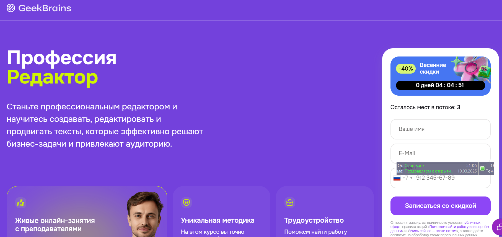
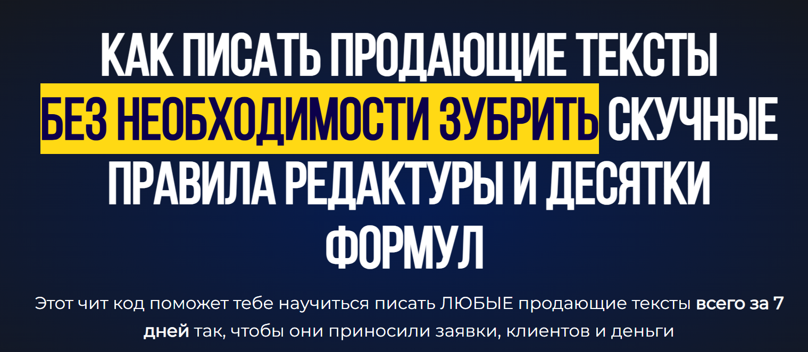
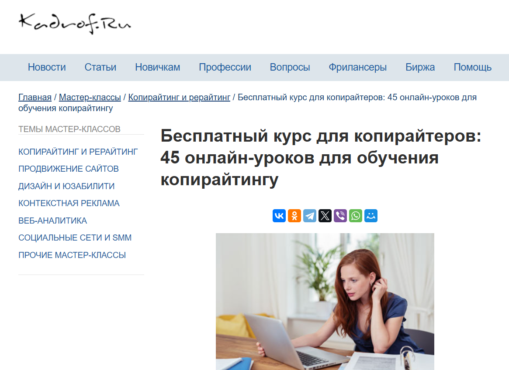
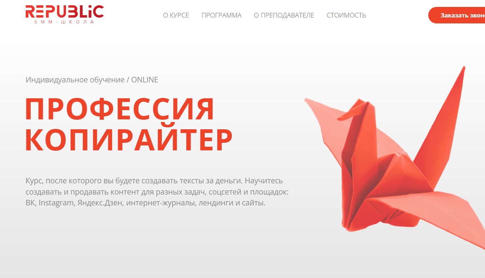

№1 Копирайтинг от А до Я — Skillbox

Сайт: https://skillbox.ru/course/copywriter/
Цена за курс: 2 457 р/мес (возможность рассрочки на 12 месяцев)
Общая стоимость: 29 484 р.
Вы получите сертификат, который подтвердит ваше участие в курсе и станет дополнительным преимуществом при трудоустройстве.
Вы освоите навыки написания качественных текстов для различных аудиторий, а также научитесь управлять вниманием читателей. Сможете утвердиться как эксперт в своей области и увеличить свой доход.
Чек-листы и образцы для создания эффективных текстов.
Портфолио, состоящее из 5 работ.
Практические задания на основе живых брифов.
Неограниченный доступ к курсу.
Кому будет полезен этот курс
Новичкам в профессии
Вы получите представление о копирайтинге. Научитесь создавать качественные тексты, собирать информацию, структурировать контент и формировать интересный материал.
Контент-маркетологам и специалистам SMM
Вы поймёте, как создавать продающие тексты для социальных сетей, email-рассылок, лендингов и других рекламных платформ. Это поможет вам расширить аудиторию бренда и повысить лояльность клиентов.
Студентам и выпускникам гуманитарных факультетов
Вы получите практические навыки работы с коммерческими текстами и научитесь решать бизнес-задачи.
Тем, кто хочет зарабатывать на тексте
Вы узнаете о профессии копирайтера. Научитесь качественно писать в различных форматах и выбирать интересные проекты, предлагая свои услуги, чтобы начать зарабатывать.
Что вы освоите
Создание качественных текстов.
Вы научитесь работать в различных форматах и стилях, а также иллюстрировать тексты примерами.
Работа с брифом.
Вы узнаете, как быстро разобраться в задании и эффективно взаимодействовать с заказчиком.
Создание контента для целевой аудитории.
Вы научитесь распознавать потребности читателей и создавать полезный контент.
Редактирование собственных и чужих текстов.
Вы поймёте, как избавиться от канцеляризмов и лишних слов, а также создать текст, который заинтересует до конца.
Презентация собственной работы.
Вы узнаете, как реагировать на правки и возражения, а также как конструктивно общаться с заказчиком.
Формирование портфолио.
Вы разберётесь, как подбирать работы для портфолио, аргументировать ценность своей работы и представлять себя клиенту.
Программа курса
Вас ожидают вебинары и практические занятия, основанные на реальных примерах.
8 тематических модулей.
41 онлайн-занятие.
Основы профессии.
Разные форматы текста — статьи.
Форматы текста — карточки.
Форматы текста — email-рассылки.
Другие форматы текстов.
Как создавать эффективные тексты.
Как взаимодействовать с клиентами и организовывать свою работу.
Личный бренд.
Итоговый проект: создание текстового контента согласно брифу клиента.
Преподаватели
Сергей Король — контент-директор Яндекса.
Людмила Сарычева — глава редакционного бюро «Гладлакс», редактор и автор книг по текстам.
Полина Накрайникова — редактор развития в «Горящей избе».
№2 Факультет редактуры и копирайтинга в Geekbrains

Диплом о профессиональной переподготовке — да.
Государственная образовательная лицензия — да.
Цена: от 2 907 руб в месяц с рассрочкой до 36 месяцев.
ФОРМАТЫ ОБУЧЕНИЯ:
Занятия в группе с преподавателем.
Онлайн-лекции и вебинары.
Видеозаписи занятий.
ДЛИТЕЛЬНОСТЬ — 12 Месяцев (2 занятия в неделю)
РЕЗУЛЬТАТ — Диплом
4 работы в портфолио.
ГАРАНТИЯ — Трудоустройство после окончания курса.
Кому подходит курс
Копирайтерам
Главная цель любого продающего текста — объяснить клиентам, какие проблемы может решить ваш продукт. Вы научитесь делать это просто и привлекательно.
Тем, кто планирует сменить профессию
Станьте специалистом, создавайте качественные информационные продукты и соберите портфолио для старта своей карьеры.
SMM-менеджерам и email-маркетологам
Увеличьте свои профессиональные возможности, изучите текстовую работу в роли редактора, повысив конверсию и эффективность своих действий.
Программа обучения
1
Подготовка: определения в профессии.
Создание текстов.
Работа с информацией.
Редактирование.
Введение в профессию.
2
Юридические аспекты.
Тексты в интернете.
Этика в медиа.
Основы авторского права.
Редакция в медиапейзаже: важные моменты.
Риски работы с контентом.
Как защитить свои права в роли редактора и копирайтера.
3
Формирование контентной стратегии.
Основы вёрстки.
Создание цифровых проектов.
Аналитика.
Чему посвящена контент-стратегия.
Способы распространения контента.
Контент-план.
Редакционная политика.
4
Работа в команде.
Взаимодействие с заказчиками.
Работа фрилансера.
Роли в команде и распределение задач.
Инструменты проектной работы.
Поиск подрядчиков и сотрудников, а также управление критикой и оплатой.
Бюджет.
Эксперты
Павел Федоров — продакшен-директор КБ «Палиндром».
Создатель Telegram-канала «Паша и его прокрастинация», автор подкастов «Поредачим» и «Что-то горит». Участвовал в запуске спецпроектов для «Лайфхакера», работал в «ВКонтакте» и управлял контентом на Profi.ru, редактировал в «Нетологии».
Татьяна Симакова — главный редактор сайта The Village.
Основала медиа «Большая деревня», писала для Wonderzine, Colta.ru, OpenSpace и «Афиша Daily».
Вы научитесь создавать привлекательные тексты для различных аудиторий и целей, продвигая продукты с помощью материалов, которые невозможно игнорировать.
№3 Коммерческий редактор/копирайтер — Нетология

Сайт: https://netology.ru/programs/kontent-menedjer-edpro#/presentation
Формат обучения: видеолекции, вебинары, тесты, онлайн-мастерклассы, финальная работа.
Содержание курса — базовые модули и специализация на выбор.
Документ — диплом о профессиональной переподготовке.
Редактор контента помогает бизнесу решать поставленные задачи, подбирая текстовые форматы, формируя команду и разрабатывая контентную стратегию, оценивая её эффективность.
Профессия коммерческого редактора включает в себя не только редактирование, но и понимание задач и управление процессами.
Кому подойдёт этот курс
Журналистам, копирайтерам и новичкам в редактировании
Вы сможете погрузиться в пространство digital, сменить область работы и начать создавать контент для бизнеса.
Маркетологам, PR- и SMM-специалистам
Освойте продвижение бренда с помощью контента и взаимодействие с редакцией.
Тем, кто намерен сменить профессию
Научитесь работать с разнообразными форматами контента, упаковывать его, разрабатывать стратегии и управлять редакционными процессами.
Чему вы научитесь
Создавать тексты, соответствующие бизнес-задачам
Написание статей для корпоративных блогов и медиа, контента для постов в соцсетях и email-рассылок.
Верстать статьи и лендинги
Составление текстов в Tilda, Readymag, Setka, WordPress и создание полных информационных продуктов.
Использовать приемы сторителлинга
Подбор иллюстраций, соблюдение принципов типографики, «гигиеничность» текста.
Выстраивать редакционные процессы
Планирование работы команды, создание стандартов редактирования, контент-планов и определение KPI.
Организовывать дистрибуцию контента
Выбор каналов продвижения, расчёт бюджета, составление медиапланов.
Работать с аналитикой
Мониторинг показателей через веб-аналитику для оценки эффективности контента и стратегий продвижения.
Итоговый проект
Вы создадите контент-стратегию или бизнес-план с концепцией специального проекта в зависимости от выбранной специализации. Основой станет реальный проект или задача, а если вашего проекта нет — мы предложим учебный.
Форматы обучения
Коммерческий редактор с нуля.
Для тех, кто хочет развить навыки в новой профессии.
8,5 месяцев, 330 часов, 52 лекции по 1,5 часа, 27 домашних заданий с проверкой.
Содержание программы
Работа с текстом.
Упаковка контента.
Специализация: основы контент-маркетинга. Вы научитесь работать с соцсетями, создавать лендинги, вести корпоративные блоги и составлять email-рассылки, а также разрабатывать контент-стратегию.
Рассрочка: 3 785 р / мес. на 18 месяцев.
Общая стоимость: 68 140 р.
Коммерческий редактор PRO
Для специалистов, работающих с текстами, стремящихся развиваться в роли редактора.
7 месяцев, 309 или 262 часа, в зависимости от специализации; 42 или 48 лекций по 1,5 часа; 18 или 12 домашних заданий с проверкой.
Содержание программы
Упаковка контента.
Сторителлинг.
Специализации на выбор: основы контент-маркетинга или разработка специальных проектов.
Исследуйте различные форматы контента и постарайтесь оценить их эффективность. Научитесь работать с платформами Tilda, Readymag, Setka и WordPress. Узнайте, как организовать командную работу и превратить проект в источник дохода.
Рассрочка: 3 326 р / мес. на 18 месяцев
Полная стоимость: 59 880 р.
Учебный план
Базовый курс
Создание маркетинговых копий
Редакция и оформление контента
Сторителлинг
На пакете «Коммерческий редактор PRO»
Специализации
Разработка контент-стратегий
Создание специальных проектов
Коммерческий автор от TexTerra

Сайт: https://teachline.ru/courses/commercial-author/
Цена: 12000-26000 р.
Длительность курса: 14 видеолекций по 1,5 часа
Получите диплом и рекомендательное письмо, что упростит процесс поиска клиентов.
Курс поможет вам:
- Быстро освоить новую профессию, получать заказы и зарабатывать удаленно из любой точки мира.
- Увеличить стоимость своих услуг и перейти на уровень, где стоимость ваших текстов соответствует среднему и высокому сегменту рынка.
- Научиться создавать тексты для бизнеса. Если вы занимаетесь маркетингом, но у вас нет навыков написания анонсов, рекламных материалов, кейсов и статей – этот курс именно для вас.
Что вас ожидает?
- 14 видеолекций по 1,5 часа.
- Проверка домашних заданий и обратная связь от преподавателей.
- Возможность задавать вопросы преподавателям.
- Знания и навыки для создания текстов различных форматов – от статей до лендингов и интервью.
- Основы SEO и интернет-маркетинга.
- Компетенции, необходимые для редактирования и корректуры текстов.
- Инструменты поиска клиентов (включая менее известные).
- Доступ к дополнительным материалам курса и записям лекций в течение года.
Курс включает в себя:
Введение в копирайтинг. Обсудим задачи и особенности копирайтинга в контент-маркетинге. Выявим области ответственности копирайтера и возможности для карьерного роста. Ознакомимся с этическими нормами работы.
Разновидности текстового контента и их специфика. Как должен выглядеть полезный и актуальный контент? Рассмотрим основные типы контента и процесс его разработки. Тексты для лендингов. Определим структуру текста для лендинга, а также его ключевые блоки и формы обратной связи. Почему текст для лендинга является важным элементом его стратегии? Рассмотрим, как внедрять нестандартный контент в статьи.
Нестандартные форматы: инфографика, видео, тесты, white paper. Что такое ньюсджеккинг, и как его использовать? Как оценивается вовлеченность аудитории к контенту? Что актуально для сегмента B2C и что – для B2B? Основы источниковедения. Как правильно выбрать тему, оптимизировать контент, собрать и проверить информацию?
Структура и оформление. Восприятие печатного текста и текста на вебе – в чем различия? Как структура текста влияет на его восприятие? Основы HTML для коммерческих копирайтеров. Учимся грамотно оформлять публикации.
Примеры удачного и неудачного оформления. Стилистические особенности. Как знание стилистики помогает создавать привлекательные тексты? Почему важно разбираться в стилистике, если редактор внесет правки? Как читатели реагируют на тексты, написанные в различных стилях? Какие стилистические приемы стоит изучить?
Журналистика в коммерческом письме. Анализ общего и отличий между коммерческими авторами и журналистами. Какие качества необходимы хорошему журналисту? Форматы контента, используемые в журналистике.
Креативное письмо. Упражнения для развития литературных навыков с помощью различных методик.
Утренние страницы. Техника от противного. Фрирайтинг: различные подходы к написанию текста. Как создать текстовый контент для социальных медиа: посты и рекламные объявления. Основная концепция контента в социальных медиа.
Как создать рубрикатор и контент-план. Стандартная структура поста. Форматы контента для различных социальных сетей, например, Instagram, ВКонтакте и Facebook. Редактура и корректура. Принципы самоконтроля – как проверить свой текст, не утратив при этом его дух? Как вносить правки, чтобы не испортить авторский стиль?
Основные правила редактирования. Корректура. Важные аспекты, которые нужно учитывать. Как проверять себя, на какие источники опираться в вопросах русского языка? Как действовать, если столкнетесь с новыми словами, которые еще не зарегистрированы в официальных словарях? Основы SEO. Как генерировать трафик через поисковые системы? Почему важна текстовая оптимизация?
Где взять ключевые слова? Как их правильно интегрировать в текст? Как избежать переоптимизации? Принципы SEO. Где искать клиентов и как продвигать свои услуги? Где найти выгодные проекты?
Как правильно представить себя и развивать личный бренд? Как собрать портфолио и оформить коммерческое предложение. Практическое занятие. Обсуждение ошибок. Ответы на вопросы по результатам курса и устранение пробелов в знаниях. Практические рекомендации.
Копирайтер для экспертов и онлайн-школ — Ольга Придейная

Сайт: https://prideina-course.ru/
Стоимость:
Самостоятельный – 22500 р.
Базовый – 29500 р.
Максимальный пакет – 45500 р.
На кого направлен этот курс
Для тех, кто:
- мечтает стать копирайтером и работать удаленно;
- любит писать и думает превратить это хобби в профессию;
- желает находить работу даже в нестабильные времена;
- уже пишет текст для Instagram и хочет расширить свои навыки и услуги;
- хочет получить не только теоретические знания, но и практический опыт;
- желает научиться создавать тексты, за которые будут платить больше.
Курс подходит
Для начинающих копирайтеров. Вы научитесь создавать тексты для лендингов, email-рассылок, лид-магнитов и постов в Instagram, включая экспертные и рекламные текстовые материалы. Сможете сформировать портфолио и находить работу сразу по окончании курса.
Для действующих копирайтеров. Вы получите навыки создания качественного контента для специалистов, улучшите свои знания в области маркетинга, сможете «упаковать» свои услуги, повысив их стоимость. Также вы познакомитесь с принципами работы инфобизнеса.
Для SMM-специалистов, контент-менеджеров и администраторов Instagram. Вы научитесь создавать увлекательный контент, который заинтересует читателя с первых строк, продавать и привлекать новую аудиторию с помощью текста. Это даст возможность расширить свои навыки и повысить доход.
Формат обучения
Месяц практической работы с текстами.
Обучение проходит онлайн на платформе Getcourse. Один раз в неделю проходят живые вебинары, где вы получаете новые знания. Всего 4 вебинара с возможностью задать вопросы и обсудить распространенные ошибки. Если не можете присутствовать – есть возможность пересмотреть записи.
На каждом этапе обучения вы изучаете видеоуроки и дополнительные материалы в формате электронных документов: чек-листы, инструкции и другие ресурсы.
Два раза в неделю необходимо выполнять домашние задания в удобное время.
Получаете подробную индивидуальную обратную связь на платформе в аудиоформате. Ничто не останется без внимания.
Доступ к групповому чату для общения, поддержки и срочных вопросов. В чате можно взаимодействовать с автором курса и другими участниками.
На пятой неделе стажировка в реальных проектах (для участников тарифов «Базовый» и «Максимальный»). Вы получите опыт взаимодействия с клиентами и шанс найти работу еще во время курса.
После окончания обучения вы получите доступ к чату с вакансиями в Telegram для участников курса, что упростит поиск работы.
Учебная программа курса
1-я неделя
1-й блок: Написание убедительных коммерческих текстов. Как эффективно продавать через текст.
Как писать просто и в то же время убедительно.
Структура текста.
Формулы создания продающего текста.
Как привлечь читателя, используя эффектное начало.
Психология продаж. Продающие блоки в тексте. Как донести информацию о товаре/услуге на языке выгод.
Призыв к действию и формулы создания таких призывов.
Как грамотно продавать без стеснения.
2-я неделя
2-й блок: Создание текста для лендинга.
Разработка лендинга для бесплатного вебинара эксперта: структура и основные блоки.
Как создавать привлекательные заголовки и подзаголовки.
Использование триггеров.
Компоненты текста для лендинга – одна из самых востребованных и высокооплачиваемых услуг.
3-й блок: Написание текстов для email-рассылок.
Основные принципы успешной email-рассылки.
Научитесь формировать эффективные email-рассылки для экспертов так, чтобы читали каждое письмо.
Существуют различные типы рассылок.
Как написать последовательность писем для вебинаров.
Что включать в письмо.
Роль копирайтера в создании рассылок.
Как оценить эффективность email-рассылки и улучшить ее показатели.
Методы снижения риска попадания в спам.
3-я неделя
4-й блок: Создание экспертного контента в Instagram.
Как создать тесную связь с подписчиками.
Основные принципы написания экспертного текста.
Как наладить коммуникацию с экспертом и адаптироваться под его стиль.
Контентная воронка и пути привлечения клиентов через посты и истории.
Составление контент-плана и стратегии продвижения по воронке.
5-й блок: Как привлечь максимальное количество участников на вебинар через Instagram.
Эффективные методы анонсирования вебинаров и приглашения участников через контент в блоге эксперта.
Классические и альтернативные способы представления информации.
[/spoiler>
Сторителлинг: Искусство составления историй
Как привлечь внимание аудитории.
Неделя 4
Блок 6: Лид-магниты
Определение лид-магнитов.
Виды лид-магнитов. Как на них может зарабатывать копирайтер.
Цель использования лид-магнитов.
Правила их разработки.
Дополнительные уроки:
- Урок от психолога: «Как справиться со страхами начинающего копирайтера».
- Урок: «Создание текстов для лендинга платного продукта».
- Урок: «Управление копирайтинг-проектами. Как просто организовать задачи и проекты».
- Урок: «Управление задачами и таск-менеджмент».
- Урок: «Значение контента для продвижения образовательных продуктов».
- Урок: «Создание прототипа лендинга».
- Урок: «Яндекс.Дзен: как использовать».
- Урок: «Создание текста для таргетированной рекламы».
Прохождение стажировки (тарифы «Базовый» и «Хочу максимум»)
Неделя 5
Стажировка (тарифы «Базовый» и «Хочу максимум»)
Об авторе обучения
Ольга Придеина
- Копирайтер и филолог, создающая обучающие курсы по копирайтингу.
- Опыт в копирайтинге — 5 лет.
- Более 4500 коммерческих текстов, написанных на заказ.
- Организатор курсов для более 600 выпускников, часть из которых работают с популярными блогерами.
Курс копирайтинга

Хотя основы письма нам прививают еще в школьные годы, не всем удается эффективно выражать свои мысли, взаимодействовать с читателями через текст и достигать профессиональных целей с помощью письма.
Навыки копирайтинга являются необходимыми для современного специалиста. Они могут пригодиться как в качестве дополнительной компетенции, так и стать основным источником дохода.
Школа юного копирайтера предоставляет знания и навыки для начала создания текстов, ориентированных на коммерцию. В курс входит изучение базовых принципов копирайтинга, нюансов написания текстов для разных форматов и целей, технических требований, правил редактирования и приемов, а также упражнений для развития креативности и улучшения качества содержания текстов.
В программе – 8 онлайн-занятий с практическими заданиями. Работая с текстами, вы получите необходимые навыки и отзывы от преподавателя, сможете анализировать произведения своих соучеников.
Занятия проводятся в онлайн-формате по рабочим дням с 10:00 до 12:00, дважды в неделю.
Интенсивный копирайтинг-курс

Цена: 8 888 РУБЛЕЙ
Продолжительность: 4 недели
7 закрыл уроков по 1,5-2,5 часа: 6 записанных + 1 онлайн-трансляция.
6 домашних заданий с индивидуальным анализом каждой работы и отслеживанием прогресса.
Структура курса
- Основные принципы качественного текста: создайте свой первый текст, следуя правилам копирайтинга.
- Типовой текст: научитесь писать полезные материалы, которые получат множество лайков и сохранений.
- Анализ ошибок: освоение выявления и исправления ошибок, что сделает текст более легким и красноречивым.
- Методы написания: ознакомьтесь с простыми техниками, чтобы не теряться в процессе создания текста.
- Художественные средства: наделите текст эмоциями, создавая в воображении читателя яркие образы.
- Нативная реклама и интервью: изучите, как представить продукт так, чтобы привлечь внимание рекламодателей.
Курс по техническому копирайтингу

Длительность: 72 часа.
Цена обучения для частных лиц: 19800 руб.
Цена обучения для юридических лиц: 24900 руб.
Цели обучения
Улучшение профессиональных навыков в области разработки технической документации и аналитики в IT-отрасли. Обучение проходит онлайн, вы сами выбираете дату начала и время занятий.
Что вас ждет во время курса и по его окончании?
Если вы новичок, мы поможем вам понять, что такое работа технического писателя и подготовить первые документы для портфолио.
Вы получите удовлетворение от первых шагов в профессии и массу новых знаний.
Знания и сертификат от профильной компании позволят вам уверенно начать карьеру. Если у вас уже есть опыт, но есть вопросы, обучение поможет вам их прояснить и усовершенствовать навыки.
Вы получите больше удовольствия от работы и сможете браться за более сложные задачи.
Опытные технические писатели, готовые к критике, смогут выявить недостатки и устранить их в процессе обучения.
Кроме новых знаний, возможно, вы откроете двери к вопросам карьерного роста, ведь никогда не поздно развиваться!
Программа курса
- Введение в профессию:
- Как стать техническим писателем.
- Правовые аспекты работы.
- Типы документов и их потребители.
- Форматы документации и статей.
- Стиль технических текстов.
- Основы создания технического контента.
- Методика разработки документации на ПО и оборудование.
- Создание аналитических и научных статей.
- Создание видеодокументации и презентаций.
- Описание программного кода и схем оборудования.
- Подготовка технических заданий и маркетинговых текстов.
- Работа с переводной документацией и оформлением сайтов.
- Ознакомление с необходимым ПО и спецификой работы редактора.
- Процесс производства документации и стандарты в этой области.
- Что можно изучить самостоятельно?
- Тестирование документации.
- Итоговая работа: создание документации, обзорной статьи или презентации.
Последний курс по копирайтингу
Содержание курса
- Вы будете писать, писать и снова писать. Обучение — это не просто мотивационные вебинары.
- 49 видеоуроков: записанные материалы доступны для просмотра в любое время и для повторного изучения.
- Личный кабинет, доступный с любых устройств с интернетом, все организовано удобно.
- Каждое занятие сопровождается домашними заданиями для закрепления материала.
- Ответы на ваши вопросы в течение 24 часов, персональная обратная связь по запросу.
- Примеры из практики, никаких лишних теорий — только актуальные знания.
- Доступ к курсу на постоянной основе — поздно, не стоит спешить.
- Готовое портфолио с рекламными текстами для выбранного продукта.
- Онлайн-вебинары с разбором ваших текстов и улучшением их качества.
- Самостоятельное обучение с возможностью получать обратную связь при написании текстов.
- Групповое обучение и обсуждение текстов также приветствуются.
К группе можно подключиться в любое время, и наличие завершивших обучение участников не имеет значения. Каждый движется в собственном ритме. Важная часть нашего формата — это еженедельные встречи по воскресеньям, во время которых я предоставляю обратную связь на каждый текст, присланный участниками. Пропустили занятие? Не беда! Вы всегда можете вернуться и ознакомиться с записью.
ИЛИ ИНДИВИДУАЛЬНАЯ РАБОТА СО МНОЙ В СКАЙПЕ
Здесь речь идет о персонализированном подходе: вы получаете проверку каждого вашего задания в режиме скайп-консультации, а также внедрение дополнительных «приемов», которые усилят ваши задачи, адаптированные под конкретные потребности студента. Этот формат, конечно, подходит не каждому, так как он требует больше времени и финансовых вложений. Если у вас ограничено время, гораздо проще присоединиться к группе.
Авторский Курс — Надежда Сокирская

Сайт: https://sokirskaya.ru/
Длительность: 6 недель обучения
ЦЕНА КУРСА:
Базовый — 35000р
Больше практики — 46000р
Максимум практики — 85000р
КАКИЕ ВОЗМОЖНОСТИ ДАЕТ КУРС?
Этот курс станет полезным для людей, желающих научиться писать тексты на заказ, независимо от их предыдущего опыта. Если у вас есть грамотность и готовность трудиться, то за 6 недель вы получите основы профессии, сможете поработать с реальными клиентами и создать собственное портфолио.
Для тех, кто уже пишет тексты, но хочет увеличить свой доход, курс поможет выявить сильные и слабые стороны, проанализировать ошибки, обрести новые знания и уверенность в своих силах. Вы научитесь создавать контент, который увеличит продажи и сделает вас желанным автором для блогеров, продюсеров и владельцев бизнеса.
О ФОРМАТЕ КУРСА
Программа учебного процесса включает 6 недель интенсивного обучения с выходом уроков в будние дни, выполнение 12 домашних заданий. Участники распределяются по рабочим группам (10-12 человек) под руководством куратора. Каждое задание проверяется куратором, предоставляется детальная обратная связь, а также работа над реальными проектами с получением отзывов от заказчиков. Вы создадите актуальное портфолио на платформе Tilda, а также будете иметь доступ к поддерживающему Telegram-каналу с коучем и системе накопления баллов для получения призов.
КОНТЕНТ КУРСА
Вводный раздел. Сразу доступен после оплаты.
Поиск работы. Доступ на второй неделе курса.
Основные навыки копирайтера.
Тексты, которые способствуют увеличению продаж. Практика с реальными заказчиками.
Контент для социальных сетей. Практическая работа с клиентами.
Портфолио. Итоговое резюмирование.
Дополнительный модуль-тренажер для отработки общения с клиентами.
О ПРЕПОДАВАТЕЛЕ
Надя Сокирская
журналист, редактор и блогер. Окончила Литературный институт, известный своим обучением литературному мастерству. Работала более 10 лет в СМИ: сначала была редактором на радиостанциях «Русская служба новостей» и «Говорит Москва», позже — выпускающим редактором на сайте «Комсомольской правды». С 2014 по 2017 годы была главным редактором Леди.Mail.Ru. Читала лекции по интернет-журналистике на журфаке МГУ, курировала стажеров и активно сотрудничала с авторами. Создала блог и за короткий период собрала более 100 тысяч подписчиков. Преподавала в школе телевидения «Останкино ТВ».
КУРАТОРЫ
Наталья Семенова
Шеф-редактор PR-службы Правительства Москвы. Ранее работала редактором на aif.ru и шеф-редактором на телеканале «Звезда».
Алена Костомарова
Шеф-редактор и заместитель руководителя отдела спецпроектов МИА «Россия сегодня». Помогает бизнесам рассказывать о себе и решать задачи. Имеет 14-летний опыт работы с текстами и сотрудничала с такими изданиями, как Geo и РБК.
Конструктор продающего текста от Школы копирайтинга Дениса Каплунова
&nps;
Сайт: https://deniskaplunov.com/kpt/
Стоимость:
Стандарт: 18 525 руб
Премиум: 37 275 руб
На протяжении 1,5 месяцев, изучив более 70 примеров, вы освоите 100 самых результативных техник копирайтинга, что позволит увеличить конверсию ваших tekstov как минимум в 3 раза.
Кем будет полезен данный курс?
Предпринимателям и владельцам бизнеса
Вы научитесь создавать текстовый контент, который привлечет на 3–5 раз больше клиентов и увеличит вашу прибыль.
Копирайтерам (независимым и штатным)
Вы усовершенствуете свои навыки, освоите новые методы и повысите эффективность своей работы, что приведет к значительному увеличению дохода.
Консультантам и экспертам
Вы получите навыки написания текста для продвижения услуг, что поможет увеличить средний чек и доход в несколько раз.
Маркетологам и менеджерам по продажам
Вы освоите важные навыки, которые даст вам конкурентное преимущество и помогут значительно повысить результаты.
ЧТО ВАС ЖДЕТ?
Полтора месяца обучения
100+ методов копирайтинга
Проверка домашних заданий
70+ примеров текстов
Гибкий график обучения
18 видео-уроков
Конспекты всех занятий
Дополнительные материалы
СОДЕРЖАНИЕ КУРСА
«Заголовки»
#1
Главный вопрос для заголовков.
3 ключевых задачи заголовка.
Как привлечь интерес с помощью «надзаголовка».
Примеры эффективных надзаголовков в продаже.
20 формул написания успешных заголовков.
Когда нужен подзаголовок и его функции.
20 примеров сочетания «Заголовок + Подзаголовок».
В итоге: вы научитесь создавать заметные заголовки, которые привлекают внимание и вовлекают в текст.
«Вводная часть»
#2
Причина, по которой 80% текстов теряют читателя.
Формула вовлечения читателя.
5 задач вводной части текста.
Микро-заголовки и их роль.
7 техник создания мини-заголовков и 34 примера.
10 основных техник вводной части продающего текста.
10 креативных техник для начала текста.
В итоге: вы поймете, как правильно начинать продающий текст, чтобы вызвать доверие и заинтересовать читателя в дальнейшем.
«Описание и представление»
#3
Эффективность принципа «Тройной выгоды».
7 способов обновить старый продукт.
Формула презентации товара в 2 шага.
Уникальное торговое предложение в 10-20 словах.
14 техник представления продукта/услуги.
Теглайн для усиления текста + 7 идей.
В итоге: разработаете уникальное предложение и научитесь подчеркивать преимущества, чтобы выделяться на фоне конкурентов.
«Доказательства»
#4
Зачем нужны доказательства в тексте.
Принцип социального доказательства.
Формулы для составления отзывов.
Создание кейсов и рассказ историй успеха.
Как цифры усиливают доказательства.
Инструменты для подтверждения вашей компетенции.
16 видов доказательств с примерами.
В итоге: вы сможете подбирать аргументы, снимать сомнения и возражения, убедительно демонстрируя эффективность вашего продукта.
«Ценовое предложение»
#5
Понятие «продажа цены».
Как писать в отсутствие фиксированной цены.
Стратегии для аргументации одинаковой цены.
5 подходов к работе с тарифами.
4 типа и 9 примеров гарантий.
Техники аргументации цены.
В итоге: освоите искусство формирования ценовых предложений, чтобы клиент сам увидел выгоду сотрудничества с вами.
«Заключение текста»
#6
Как завершать продающий текст и не потерять конверсию.
Формула призыва к действию.
Специальные предложения и их влияние на результаты.
15 примеров эффективных финалов продающих текстов.
В результате
вы научитесь завершать продающий текст так, чтобы читатель сразу захотел начать сотрудничество.
КАК ПРОДВИГАЕТСЯ ОБУЧЕНИЕ?
Старт
Вы получаете доступ к платформе с материалами курса.
Уроки
Пос последовательно изучаете видео-уроки каждого модуля (теория + примеры из практики).
Практика
Выполняете задания и отправляете их на проверку.
Проверка
Преподаватель анализирует работу и дает рекомендации.
Консалтинг
Доступ к 2 консультациям от Дениса Каплунова (в пакете «Премиум»).
Автор курса
Денис Каплунов
Известная личность в сфере копирайтинга, контента и маркетинга.
Заработал отличную репутацию за счет профессиональной работы с текстом.
12 лет опыта в создании коммерческого контента.
Более 4000 успешных проектов для свыше 700 клиентов.
Работа с более чем 100 видами бизнеса.
Основатель агентства «Студия Дениса Каплунова».
Что вы получите, пройдя курс
Бонус 1 — Мини-курс «Копирайтинг XXI века»
Бонус 2 — Комплект из 10 чек-листов
Бонус 3 — Мастер-класс «SOLD OUT»
Бонус 4 — Мастер-класс «Клиенты из соцсетей»
Бонус 5 — Мастер-класс «15 упражнений по копирайтингу»
Бонус 6 — Мастер-класс «Коммерческое предложение на 1 страницу»
Бонус 7 — Мастер-класс «Переписка с клиентами»
«Базовый курс Главреда» от Максима Ильяхова

За последние шесть лет наш курс претерпел несколько обновлений: новые темы были добавлены, а старые получили новые идеи. В конце 2019 года вместе со Стасом Миляевым мы выпустили видеоверсию, в которой собраны ключевые знания о создании сильного текста в 13 коротких видео. Я заново продумал старые темы и внедрил несколько новшеств:
— Использование Главреда
— Понятие информационного стиля
— Стоп-слова
— Вводные конструкции
— Оценочные словосочетания и усилители
— Штампы
— Заумь
— Синтаксис
— Канцеляризмы
— Кинематографические приемы
— Уточнения
— Однородные члены
— Ясность в тексте
— Эффективная коммуникация
— Практическая ценность текста
— Контекст
— Следующие шаги
Углубленный 2-месячный курс ИНТЕРНЕТ-ПРОФЕССИЯ КОПИРАЙТЕР 2.0 от Натальи Реген
Сайт: https://infovoronka.ru/ipk2-0-price-special Цена: Пакет Базовый — 13990р Пакет Стандарт — 20990р Пакет Премиум — 40990р
Обучающий курс
Модуль 0
Подготовительный этап
На первом шаге мы установим контакт. Вы узнаете структуру курса и методы обучения. Предметом нашего изучения станут основы маркетинга, необходимые каждому копирайтеру. Мы подробно разберем профессию копирайтера и формулу «Т», которую можно применять в работе. Вы также поймете, каким образом можно найти первого клиента для стажировки, что даст возможность получить начальный опыт работы с реальным заказчиком.
Модуль 1
Тексты и статьи для сайта
Каковы виды и форматы статей, которые должно уметь создавать?
Шаблоны различных типов статей.
Практические задания по созданию первых статей для портфолио.
Принципы написания текстов для наполнения сайта: главной страницы, страницы категорий, страницы услуг, страницы об авторе и страницы о компании и другие.
Как создавать структуру любого текста: практическое занятие.
Модуль 2
Продающие текста
Вы ознакомитесь с типами и форматами продающих текстов.
Рабочая тетрадь с рекомендациями по структуре текстов, с помощью которой вы сэкономите время.
Формулы самых востребованных продающих текстов.
Практическое задание: создание продающего текста для портфолио.
Модуль 3
Социальные сети
Как организовать сторителлинг?
Составление контент-плана для заказчика.
Как писать тексты для соцсетей?
Контентные публикации.
Системы прогрева аудитории: как подготавливать ее к покупкам.
Рекламные и продающие посты.
Модуль 4
Рассылки, чат-боты и автоматизированные воронки
Как выстроить стратегию рассылок (с примерами и шаблонами)?
Алгоритм написания пяти типов писем.
Как создавать автоворонки: теоретическая и практическая часть.
Как разработать чат-бота: услуга от 15 000 рублей.
Модуль 5
Упаковка услуг и самопрезентация
Как составить бриф, который определит порядок работы с заказчиком.
Как правильно оформить портфолио.
Как разрабатывать кейсы.
Как создать профессиональную страницу, группу или сайт для продвижения личного бренда.
Модуль 6
Поиск клиентов и получение заказов
Как находить платежеспособных клиентов?
Три наиболее эффективных метода привлечения долгосрочных клиентов.
Как вести переговоры уверенно и профессионально.
Лучшие платформы для поиска клиентов.
Готовые шаблоны обращений к заказчикам – что написать, чтобы вас выбрали исполнителем.
Модуль 7
Определение специализации для получения более высокой оплаты
Как выбрать правильную специализацию?
Основы различных направлений в копирайтинге.
Специализации на выбор: автоворонки, услуги, контент-маркетинг, интернет-магазины, онлайн-школы.
Модуль 8
Комплексные предложения для клиентов
Как сделать повторные предложения клиентам для увеличения дохода от одного проекта?
Как правильно предложить клиенту комплексную услугу: пошаговый алгоритм.
Система получения заказов на сумму от 10 000 рублей и выше за один проект.
Финал
Аттестация для получения сертификата.
План профессионального роста: пути дальнейшего развития.
Личная система повышения доходов
Формат обучения
Уроки на платформе.
Постоянные обновления.
Вебинары с ответами на вопросы.
Поддержка наставника.
Удалённая профессия Копирайтер — Артур Грант и Вероника Головченко / Profi Internet
Сайт: https://copywriting.artur-grant.ru/ Длительность: 2 недели Формат: онлайн Цена: бесплатно
ЧТО ВЫ ПОЛУЧИТЕ?
Абсолютно бесплатно пройдете двухнедельный курс по копирайтингу. Вы начнете зарабатывать удаленно, создавая тексты по заказу.
АВТОРЫ КУРСА
Артур Грант – соавтор курса и основатель школы Profi-Internet. Копирайтер с семилетним опытом, который за год карьеры поднялся с низкооплачиваемых заказов – $2-$3 за текст до $200-$400. Тексты Артура генерировали более 28 миллионов рублей продаж за последние три года.
Вероника Головченко – «играющий» тренер с более чем семилетним опытом в копирайтинге. Она обучила свыше 1000 человек на курсах и в рамках личного коучинга.
Специалист по копирайтингу
Сайт: https://copy2.0.profiinet.ru/ 3-месячный онлайн-курс. После завершения обучения вы получите сертификат. Цена: пакет «СТАНДАРТ» — 9 900 руб/мес пакет «VIP» — 15 900 руб/мес
Что вы получите после курса?
- статус сертифицированного специалиста
- упакованность как эксперт (с портфолио и личным сайтом)
- знание всех аспектов работы и готовность принимать любые сложные заказы (включая продающие тексты) начиная с 5000 рублей
- знание методов поиска дорогих клиентов и как запускать «сарафанное радио», чтобы клиенты сами приходили к вам
- уверенность в своих силах (страхи и сомнения остаются в прошлом)
- достижение своих целей (финансовых, свободных, переход на любимую работу)
Программа курса
Модуль 01
4 недели
Мастер статей
• Важнейшие инструменты копирайтера
• Разница между LSI и SEO-копирайтингом
• Особенности создания SEO-текстов для каждой страницы интернет-магазина
• Верстка текста
• Понятия: сниппет, хлебные крошки, метатеги
• Текстовый дизайн
• Создание текстов для социальных медиа
• Алгоритм мышления, позволяющий выполнять задания с легкостью и удовольствием
Модуль 02
1 неделя
Поиск первых клиентов на биржах
• Особенности выбора платформы для копирайтеров
• Как правильно заполнить профиль, чтобы заказчики выбирали вас
• Как составлять отклики и начинать зарабатывать
Модуль 03
4 недели
Создание мощного портфолио
• Разработка «убойного» портфолио с нуля
• Ценообразование: сколько стоит ваша работа?
• Поиск своей уникальной торговой позиции
• Первые заказчики вне платформ: где их найти и как к ним обратиться
Модуль 04
4 недели
Мастер продажных текстов
• Брифинг
• Анализ целевой аудитории, конкурентов и продукта
• Простые формулы «дорогого» копирайтинга
• Пошаговый алгоритм создания продающих текстов
• Сторителлинг
• Создание лендингов
• Email-рассылки
Модуль 05
1 неделя
Поиск высокооплачиваемых клиентов
• Написание кейсов
• 11 способов поиска клиентов от Артура Гранта
• Активные и пассивные способы
• Поиск клиентов в онлайне и оффлайне
• Стратегическое партнерство
Модуль 06
1 неделя
Профессиональная упаковка услуг
• Формирование «зоны экспертности»
• Выбор специализации
• Нейминг
• Создание своего сайта
Авторы тренинга
Артур Грант
• Соавтор тренинга, копирайтер-маркетолог и основатель школы Profi-Internet
• За первый год карьеры прошел путь от недорогих заказов – $2-$3 за текст, до $200-$400
• Его материалы принесли более 140 миллионов рублей за последние пять лет
Вероника Головченко
• Соавтор курса, «играющий» тренер с опытом свыше 8 лет в копирайтинге
• Обучила более 1200 учеников, многие из которых стали успешными копирайтерами, получающими удовольствие от работы
• Заработок от ее текстов составил более 7 000 000 рублей
Кому подойдет курс?
Новичкам:
Освойте один из самых прибыльных навыков на 2019-2020 год. Работайте с любой точки планеты, в гибком графике, получая стабильный доход.
Начинающим копирайтерам:
Станьте настоящим мастером в своем деле, преодолейте финансовый потолок, создайте очередь из клиентов.
Специалистам по SMM, SEO, дизайнерам, маркетологам:
Предоставляйте клиентам комплексные решения, расширяйте свои услуги и повышайте стоимость.
Существующим или будущим бизнесменам:
Сэкономьте тысячи рублей, отказываясь от дорогостоящих услуг, выбирайте качественных исполнителей.
Школа копирайтинга — Мария Солодар

Сайт: https://solodar.com/copywriting-school/ 2-месячная программа обучения. Сертификат по ее завершении. СТОИМОСТЬ УЧАСТИЯ — 59 900 РУБ.
Для кого курс?
Для всех, кто ищет работу:
И желает зарабатывать от 100 000 рублей из любой точки мира, стремясь к финансовой свободе.
Для предпринимателей:
Которые хотят открыть дополнительное направление бизнеса с высокой маржой.
Для маркетологов:
Чтобы расширить спектр предлагаемых услуг и с помощью текстов управлять поведением клиентов.
Для новичков:
Которые еще не писали ни строчки, но желают зарабатывать на текстах.
Чему вы научитесь?
Вы поймете, как составлять эффективные письма, создавать лендинги, маркетинговые материалы, продающие презентации и другие форматы текста с легкостью. Вы сможете писать посты для социальных сетей, которые помогут развивать блог и увеличивать продажи. Сможете создавать продающие текста, после прочтения которых клиент примет решение о покупке сразу же.
Вы освоите способы увеличения доходности проекта благодаря высококачественным текстам. Также вы узнаете, как применять психологические методы, которые смогут убедить даже самых скептически настроенных клиентов. В ходе обучения вы поймете, как формировать долгосрочные связи с заказчиками и стабильно зарабатывать более 100 000 рублей в месяц.
Курс
МОДУЛЬ №1
Введение: знакомство с профессией и организационные аспекты
Договор-оферта
Кто такой копирайтер? Что необходимо знать о данной профессии и как к ней подготовиться
Как пользоваться личным кабинетом и как сдавать домашние задания
Работа с брифом — начальный момент в создании любого продающего текста
Дополнительные материалы:
Шаблон брифа для копирайтера
Результаты модуля:
Вы усвоили основные понятия копирайтинга
Выбрали проект для прохождения стажировки
Научились пользоваться обучающей платформой
Разобрались, как работать с брифом
МОДУЛЬ №2
Психологические принципы копирайтинга
Основы копирайтинга: база для написания качественных текстов
Как воздействовать на действия читателя: триггеры, важные для копирайтера
Сторителлинг: основной алгоритм для написания продающих историй
Дополнительные материалы:
Психология влияния в продажах и бизнесе
30 видов ментальных триггеров с примерами в текстах
Инструкция по созданию портрета целевой аудитории
Инструкция по созданию аватара
Примеры проблем аватара
Результаты модуля:
Вы освоили основную тему копирайтинга
Изучили, как эффективно применять триггеры
Создали портрет целевой аудитории и аватара
Написали продающую историю для выбранного проекта
МОДУЛЬ №3
Смысловая обертка через текст и формирование убедительного торгового предложения
Уникальное торговое предложение и сильный оффер
Рекламные заголовки: как привлечь интерес и внимание
Дополнительные материалы:
УТП от декларации ценностей
Офферы и примеры
Формула специального предложения
Примеры офферов с использованием техники специального предложения
Результаты модуля:
Вы создадите декларацию ценностей для вашего проекта
Сформулируете сильный оффер по специальной формуле
Напишете рекламные заголовки
МОДУЛЬ №4
Проектирование лендингов и создание презентаций для коммерческих предложений
Методы создания лендингов: как разрабатывать посадочные и продающие страницы с высокой конверсией
Коммерческие предложения и маркетинг-киты
Дополнительные материалы:
Обзор платформы Mottor
Пример разработки лендинга на Tilda
Элементы лендинга: оффер, дескриптор, призыв к действию
Инструкция по созданию лендинга
Шаблон для разработки подписной страницы
Пример прототипа для продающей страницы в Google Docs
Инструкция по работе с Google Docs
Коммерческое предложение и маркетинг-кит
Схема «21 вопрос для упаковки» Лебедева
21 вопрос упаковки Лебедева
117 вопросов для упаковки
Результаты модуля:
Создадите проектировку страницы с нуля в конструкторе
Напишете коммерческое предложение для своего проекта
Научитесь разрабатывать коммерческую презентацию
Представите свой маркетинг-кит как копирайтер
МОДУЛЬ №5
Основы email-маркетинга и написание писем
Фундаментальные принципы email-маркетинга, позволяющие организовать рассылку с высокой открываемостью
E-mail как универсальный инструмент для продвижения
Правила создания продающего письма
Написание вовлекающего и коммерческого контента для социальных медиа
Технические аспекты настройки автоматической рассылки через сервис GetResponse
Дополнительные материалы:
Мастер-класс «Цепочка касаний»
Инструкция по составлению писем для email-стратегий
Инструкция по созданию воронок продаж
Примеры стратегий email-маркетинга
Видеоинструкция по работе с программой Xmind
Чек-лист по написанию и оформлению email-писем
Чек-лист по созданию серии писем и их оптимизации
Примеры email-писем
Эффективный email-маркетинг (занятие от GetResponse)
Результаты модуля:
Вы научитесь писать письма с высокой открываемостью
Создадите стратегию email-маркетинга для своего проекта
Напишите серию писем, включая продающие
МОДУЛЬ №6
Копирайтинг для социальных сетей и мессенджеров
Как составлять тексты для Instagram: описание профиля, контент и рекламные посты
Оформление страниц и привлечение аудитории в Facebook
Создание вовлекающего и продающего контента для соцсетей
Копирайтинг в мессенджерах
БОНУС. Психология продаж в социальных сетях
Дополнительные материалы:
Гайд «Принципы написания постов»
Пример оформления профиля
Плюсы и минусы Facebook
Примеры вовлекающих и прогревающих постов
5 ошибок при написании постов
Сторителлинг
Структура продающей истории
Инструкция по написанию историй
Примеры историй
7 требований к рассылке через мессенджеры
Результаты модуля:
Правильно оформите профиль вашего проекта в Instagram и Facebook
Поймёте, какие страницы в соцсетях успешны и по каким причинам
Создадите серию вовлекающих постов
Изучите, какие тексты подходят для мессенджеров и в чем их основные отличия
Научитесь использовать различные типы контента в мессенджерах
Напишете сообщение для мессенджера
МОДУЛЬ №7
Копирайтинг для видео
Копирайтинг для продающего видео
Создание сценария для «Запуска по Волкеру»
Дополнительные материалы:
Пример скрипта для видео
Пример продающего видео курса по эротическим танцам
Скрипт One Time Offer (OTO)
Скрипт для рекламного видео
Пример OTO
Как составить презентацию для продающего вебинара или выступления
Шаблон продающей презентации в Google Презентациях
Результаты модуля:
Вы разработаете сценарий продающего видео для вашего продукта
Поймете, как проводить успешные запуски и подготовите сценарии для видео вашего продукта
Создадите структуру презентации для вашего проекта
МОДУЛЬ №8
Итоговый проект
Получение сертификата
Ваш БОНУС за отзыв о Школе копирайтеров
Результаты модуля:
У вас будет реальный кейс и готовые шаблоны, схемы и алгоритмы для написания любых текстов
После успешной защиты финального проекта вы получите сертификат
БОНУСНЫЙ БЛОК
Где искать клиентов, с чего начинать новичку и как увеличить стоимость своих услуг
Какова стоимость услуг копирайтера: какие суммы озвучивать заказчику?
Как устроиться удаленно в компанию мечты: от написания резюме до онлайн-собеседования
Как налогообложение работает для фрилансеров и самозанятых
СПИКЕРЫ
Мария Солодар
Специалист в интернет-маркетинге, продюсер онлайн-проектов, предприниматель
Олег Баша
Генеральный директор GetResponse Россия, эксперт в области email-маркетинга
Информационный стиль и редактура текста от Бюро Горбунова

Курс
Первый день: слова
Стиль информационного текста
Основы редактирования
Информативность
Стоп-слова
Практическое занятие: выявление стоп-слов
Факты и убедительность текста
Практическое занятие: подбор фактов
Типичные ошибки различных уровней развития: троечников, отличников и хорошистов
Практическое занятие: повышение информативности, редактирование текста о компании
Второй день: предложение, абзац и текст
Информационная насыщенность предложения
Активный синтаксис
Правила пунктуации
Практическое занятие: редактирование на уровне предложения
Логика абзаца. Правило капрала
Практическое занятие: редактирование на уровне абзаца
Заголовки и подзаголовки
Списки
Упорядочение идей и логика изложения
Согласование и реструктуризация
Практическое занятие: создание структуры статьи
Ритм текста
Образование: обучение через текст
Практическое занятие: написание статьи для блога
Третий день: информационный продукт
Эффективный текст. Формула успешного текста
Искренность, фальш и игра
Мир читателя и адаптация под него
Синтаксис иллюстраций
Как неправильно подобранные иллюстрации могут испортить текст
Практическое занятие: подбор иллюстраций для статьи
Идеальные члены предложения
Язык людей и язык технологий
Практическое занятие: создание публичного объявления
Принцип контраста. Выделение акцентов и управление вниманием
Параллельное изложение. Текст на полях и в выносках
Текст на разных носителях: бумаге, компьютере и телефоне
Технозависимость. Проблемы с неэффективными лендингами
Практическое занятие: параллельное изложение
Анатомия информационной статьи
Практическое занятие: подготовка статьи к публикации
Четвертый день: реклама
Принцип «Быть полезным»
Реклама, которая будет рекомендована друзьям
Эффективный рекламный заголовок
Структура продающего текста
Личность и эмоции в рекламе
Приемы написания рекламных текстов: грязные и чистые
Умная гарантия
Работа с аргументами и возражениями
Отзывы
Прием «Травление лески»
Краткие и длинные промостраницы
Текст для продуктовой страницы интернет-магазина
Написание текста, полезного для клиентов и поисковиков
Практическое занятие: создание длинной промостраницы
Итоги: алгоритм написания текста
Хитрости редакционного процесса
Инструменты редактора и редакционная политика
Польза и вред текста: когда писать не стоит
Автор и ведущий курса
Максим Ильяхов
Главный редактор бюро с 2009 года, автор рекомендаций по текстам, редактированию и информационному стилю, создатель сервиса «Главред», кандидат педагогических наук.
«Инициал» от Lifehacker.Ru

Цена: бесплатно
Научиться хорошо писать не так сложно, если есть желание, время и желание практиковаться. Также важным является наличие опытного наставника.
Мы, редакторы Лайфхакера, хотим стать теми самыми наставниками для вас. Через нас прошло множество статей, мы их улучшали, допускали ошибки, получали знания и теперь готовы делиться своим опытом в формате рассылки.
Курс включает 12 писем, которые будут приходить к вам на почту раз в неделю. В каждом письме вы найдете теорию и большое количество примеров.
Вы сможете освоить:
выбор интересных тем;
Школа копирайтинга — Ольга Соломатина
Продолжительность: 2 месяца Цена: 24900р. По окончании вы получите диплом установленного образца
В нашем онлайн-учебном центре вы сможете освоить одну из самых актуальных на данный момент профессий и зарабатывать, работая из дома или в любой удобной точке мира, даже воспитывая детей.
Обучение в Школе копирайтинга делится на три ключевых направления:
– Умение вести работу с клиентами.
– Теоретические и практические основы копирайтинга и маркетинга.
– Навыки самоидентификации и поиска высокооплачиваемой работы.
Образовательная программа
1. Умение работать с клиентами.
В ходе обучения вы сможете выполнять реальные заказы и получать за это оплату, что будет настоящей практикой. Выясним, где и каким образом копирайтер может искать занятость. Освоите навыки составления технических заданий вместе с клиентом или самостоятельно. Научитесь задавать правильные вопросы для определения реальных потребностей заказчика. Изучите процесс согласования текстов. Поймете, кто является вашими идеальными клиентами и с кем лучше не сотрудничать. Также вы овладеете способами разрешения конфликтных ситуаций с клиентами и методами их избежания. Рассмотрим, что означает недовольство заказчика, когда он говорит: «Мне не нравится». Вы научитесь обсуждать замечания и внесенные правки. Поймете, как поступать, если клиент не укладывается в сроки.
2. Теоретические и практические аспекты копирайтинга и маркетинга.
Во время обучения вы будете интенсивно писать и редактировать тексты, так как это один из самых эффективных способов освоения навыка. После выполнения заданий я буду давать обратную связь и объяснять причины предложенных изменений. Вы узнаете, откуда копирайтеры берут информацию и какие существуют методы для ее получения. Рассмотрим более 20 типов материалов и научимся выбирать их в зависимости от целей. Вы научитесь создавать тексты в различных стилях: информационном, деловом, научном, художественном и других. Овладеете всеми жанрами – от постов и заметок до аналитики, авторских колонок и эссе. Узнаете о 12 типах пресс-релизов. Научитесь редактировать рамки своих текстов и иностранных. Ознакомитесь с терминами канцеляризма, стоп-словами и штампами, а также с их уместностью. Ошибки в правописании и пунктуации разберут корректоры Издательского дома «КоммерсантЪ». Поймем, чем копирайтинг отличается от журналистики. Научитесь готовить, проводить и оформлять интервью. Освоите основы стилистики. Маркетолог расскажет о рекламе, воронке продаж и уникальном торговом предложении, а я добавлю информацию по созданию продающих текстов и нативной рекламе. Вы научитесь писать тексты о компаниях, экспертах, справках, отзывах. Освоим методы работы с возражениями. Исследуем графическую составляющую текстов и страниц. Поймем основы сторителлинга и как адаптировать контент для различных социальных медиа. Научитесь создавать убедительные заголовки и подзаголовки. Обсудим, как правильно описывать фотографии. Узнаем, как упростить сложный текст, когда это возможно. Вместе с веб-разработчиками исследуем структуру посадочных страниц. Поймем, когда лучше использовать таблицы и графические элементы вместо текстов. Приглашаю юристов Издательского дома «КоммерсантЪ» для ознакомления с авторскими правами, согласованием цитат, комментариев и заимствований. Узнаете о том, что такое сюжет и как его формировать. Вам пригодится умение составлять цепочки писем. Освоите приемы удержания внимания. Научитесь отвечать на возражения и негативные комментарии под публикациями клиентов. Поймете, как переводить устные высказывания в письменный формат. Установим критерии качества.
3. Навыки позиционирования себя и нахождения высокооплачиваемой работой.
Вы поймете, что такое редакционные политики. Научитесь презентовать себя, создадите свою презентацию и портфолио. Приготовите сопроводительное письмо о себе. Освоите техники по сбору отзывов и рекомендаций. Узнаете, как редактировать чужие тексты и при этом избежать конфликтов. Справитесь со своим перфекционизмом и внутренним критиком. Поймете, какую стоимость имеют ваши услуги на рынке. Узнаете, что на самом деле продает копирайтер. Обговорим, как справляться со страхом повышения цен и как отказаться от проекта, когда это необходимо. Вы отработаете навыки ежедневного письма. Узнаете методы предотвращения выгорания. Поймете, что дедлайны могут быть вашим другом, и научитесь держать стресс под контролем. Разберетесь, как различать требовательность и неуместные требования. Поймете, что на самом деле означает «слишком дорого». Узнаете, из чего складываются часы работы копирайтера. Обсудим возможности карьерного роста с хедхантером.
Копирайтинг за 2 месяца — Мария Налобина

На курсе Вы изучите:
1. Реальный спрос на ваши тексты со стороны заказчиков и готовность платить за них.
2. Как написать качественный текст по предоставленным указаниям и заработать на этом.
3. Пошаговую стратегию, как заработать свои первые деньги в интернете.
ЭТО БЕЗУМНО ВАЖНО!????
Идеально подойдет для тех, кто мечтает стать высокооплачиваемым копирайтером, но не знает тонкостей, а также для тех, кто уже достиг определенного уровня, но хочет развиваться дальше!
Вы узнаете все нюансы этой современной профессии и получите доступ к моим уникальным методикам!
Спикер:
Мария Налобина, предприниматель, 5 лет ведет бизнес в интернете и умеет создавать тексты, которые генерируют более 10 млн.
Мария проведет детальный рассказ о самых ценных текстах на данный момент и как без особых усилий зарабатывать от 50 тыс. в месяц, выполнением 2-3 качественных заданий.
Такого вы еще не встречали нигде, ведь это наши уникальные наработки.
Вы поймете, где деньги в копирайтинге и как их завоевать.
Профессия Копирайтер — Дамир Халилов
Сайт: https://damir-halilov.ru/kurs_copywrite/
Продолжительность: 2 месяца Формат — Видеоуроки
Стоимость:
SILVER — 24 700 руб.
GOLD — 28 700 руб.
PLATINUM — 44 700 руб.
Рассрочка: От 2059 рублей в месяц
Кому подойдет
Бизнесменам
Вы научитесь составлять продающие тексты для своей компании. Создадите прототип сайта, а также коммерческое предложение или презентацию. Это увеличит доход вашего бизнеса.
Маркетологам и SMM-специалистам
Вы овладеете навыками создания эффективных текстов для социальных сетей, электронных рассылок, рекламы и других каналов. Составите контент-стратегию для достижения целей компании.
Копирайтерам
Углубите свою экспертизу, развите личный бренд, повысите востребованность и стоимость своих услуг.
Тем, кто хочет освоить востребованную профессию
Вы получите новую интересную профессию, которая позволит работать из любого места.
Вы научитесь
Создавать
Сильные тексты
Вы приобретете навыки написания текстов на любые темы, в различных форматах и под любые задачи.
Понимать
Потребности своей аудитории
Научитесь создавать контент, который будет интересен вашим читателям и клиентам.
Находить
Креативные идеи
Изучите методики креативного мышления и научитесь генерировать оригинальные идеи.
Приносить
Пользу бизнесу
Поймете, как с помощью текста создать доверие к бренду и увеличить приток клиентов.
Продвигать
Свою продукцию
Узнаете, где искать клиентов и как правильно формировать свои предложения.
Процесс обучения
Вы изучаете материалы курса и закрепляете знания на практических заданиях. Для успешного завершения курса достаточно уделять 3-5 часов в неделю.
01
Видеоуроки три раза в неделю
02
Проверка домашних заданий и рекомендации от кураторов
03
Чат с кураторами и сокурсниками
04
Четыре воркшопа с Дамиром — обсуждение текстов участников в эфире
05
Чек-листы, презентации, шаблоны и доступ к базе скринкастов
06
Создание сайта-визитки и портфолио по окончании курса
07
Сертификат Школы и сертификат государственного образца
08
Доступ в закрытый канал с вакансиями для выпускников после завершения курса
Программа курса
ВВЕДЕНИЕ В КОПИРАЙТИНГ
ПРИЕМЫ КОПИРАЙТИНГА
БИЗНЕС-СТОРИТЕЛЛИНГ
ТЕКСТЫ ДЛЯ СОЦИАЛЬНЫХ СЕТЕЙ
ТЕКСТЫ ДЛЯ САЙТОВ
ТЕКСТЫ ДЛЯ E-MAIL РАССЫЛОК
ТЕКСТЫ ДЛЯ ПРЕЗЕНТАЦИЙ, ПРОДАЖНЫХ МАРКЕТИНГ-КИТОВ, БРОШЮР
СТАТЬИ И ПУБЛИКАЦИИ В СМИ
МОНЕТИЗАЦИЯ И ПОИСК КЛИЕНТОВ
Расширенный блок курса и VIP-класс
УПАКОВКА ТЕКСТА
ТЕКСТЫ И ПРОДВИЖЕНИЕ В ЯНДЕКС.DZEN
ЛИЧНЫЙ БРЕНД И ПОСТРОЕНИЕ КОПИРАЙТИНГ-АГЕНТСТВА
Автор курса
Дамир Халилов
Создатель GreenPR, первого SMM-агентства в России
Автор бестселлера «Маркетинг в социальных сетях», который стал победителем Книжной премии Рунета 2014 года в категории «Выбор пользователей»
Регулярно выступает на конференциях, таких как РИФ, RIW, «Российская неделя маркетинга», Российская неделя продаж, Суровый Питерский SMM, СПИК
Тексты на 360 — Ксения Лебедева
Сайт: https://upgrademarket.ru/textspro Цена: нет данных
Кому подойдет?
Тем, кто ищет творческое дело по душе
Чтобы это занятие приносило не только деньги, но и радость.
Начинающим копирайтерам
Чтобы быстрее выйти из состояния «пишу тексты по 100 рублей за 1000 знаков».
Все фрилансеры и удаленные сотрудники
Чтобы приобрести новый навык и повысить стоимость своих услуг.
Программа курса
1
База
— Основы текстов
— Какова ваша сила как писателя?
— Виды текстов
— Основные ошибки копирайтеров
— Рекомендуемая литература для изучения текстов
Результат: вы будете говорить на языке копирайтеров, понимать направление работы и составлять ясный план действий.
2
Журналистика
— Принципы написания текстов
— Источники информации
— Виды текстовых форматов
— Официальные правила создания текстов
— Особенности написания для корпоративных блогов, интервью и дайджестов
— Как создать привлекательный заголовок
— Принципы успешного автора
— Поиск работы:
1) Как подготовить сопроводительное письмо
2) Как упоминать о нехватке опыта
3) Как составить резюме
4) Где можно искать вакансии
Результат: вы получите глубокое понимание журналистики и научитесь писать для СМИ.
3
Продающие тексты
— Особенности копирайтинга, ориентированного на продажи
— Структура текстов, стимулирующих покупки
— Понимание потребностей клиентов: выявление и решение
— Эмоциональные триггеры
— Как предлагать помощь вместо навязывания
— Тексты для инфобизнеса
— Продающие рассылки
Результат: порадуете своих клиентов вниманием, а не агрессивной продажей.
4
Тексты для блога
— Характеристика блоговых текстов
— Создание эффективного контент-плана
— Методы привлечения внимания аудитории
— Как создать хайп, даже если это не ваше
— Кликбейт: как и когда его использовать
— Сторителлинг для удержания читателей
— Посты, которые продают
Результат: освоите все инструменты для ведения своего или чужого блога.
5
Заработок
— Способы монетизации своих навыков
— Фриланс: как с чего начать
— Поиск клиентов: платформы для работы
— Шаблон заявки для биржи
— Бриф для заказчиков
— Как увеличить свой доход
— Расширение и делегирование задач
Результат: создадите систему заработка на своих умениях и научитесь повышать свои расценки.
6
SEO-тексты
— Основные термины в области SEO-копирайтинга
— Как поисковые системы оценивают тексты
— Различия между копирайтингом и рерайтингом
— Смысловая структура сайта
— Разбор технического задания
— Структура сниппета (внешние заголовки страницы)
Результат: вы научитесь продвигать сайты в поисковой системе через текст и сможете эффективно взаимодействовать с SEO-специалистом.
7
Психологические препятствия к деньгам
— Алгоритм для установки целей
— Психология бедности
— Как преодолеть страх перед деньгами?
Результат: устраните психологические барьеры, мешающие вам зарабатывать.
Преподаватели курса
Ксюша Лебедева
Создавала тексты для продаж на сайтах, управляла коммерческими и личными аккаунтами, имела опыт в fashion и travel-журналистике. Заработок на текстах достигал 100 тысяч рублей в месяц, знает, как продать один пост за 3500 рублей.
Маргарита Взнуздаева
Автор статей для VC.ru, Habr, Diletant Media и ряда других медиа. Знает, как пробиться в журналистику и зарабатывать на текстах, не имея собственного блога.
Школа копирайтинга — The Words

Сайт: https://the-words.ru/
Стоимость: от 13500 руб до 150000 руб.
Для кого предназначен курс?
Работающим специалистам, ищущим новые возможности
Тем, кто стремится к смене работы, повышению дохода, мечтает о независимости, большем времени для семьи и хочет избежать пробок.
Копирайтерам
Желающим значительно увеличить свои расценки, стабильно находить высокооплачиваемые заказы и работать на уровне эксперта, к которому клиенты долго ждут.
Предпринимателям
Понимющим, что в мире цифровых товаров именно текст помогает донести ценность до клиентов. Они хотят сократить затраты на качественный маркетинг, увеличить количество заявок и откликов на статьи и посты.
Маркетологам
Задача которых — прокачаться в копирайтинге, чтобы принести больше пользы компании, увеличить доход и заслужить уважение коллег.
Фрилансерам
Желающим увеличить поток клиентов и значительно повысить стоимость своих услуг за счет правильного позиционирования.
Девушкам в декрете
Стремящимся к стабильному доходу, не желающим отказываться от желаемого, и желающим стать более независимыми, не ущемляя своего ребенка в покупке игрушек.
Кураторы
Анастасия Кузьмина
Наталья Ягфарова
Диплом
По завершению выполнения всех заданий выпускник курса получает электронный диплом, который может разместить на своих страницах в интернете и прикрепить к резюме при поиске работы.
«Удалённая профессия копирайтер» от Profi Internet
Сайт: https://profiinet.com/course/kopirajting-besplatnyj-kurs
Цена: Бесплатно
Что вы узнаете на курсе
Познакомитесь с профессией копирайтера и его полезностью для онлайн-бизнеса.
Создадите свой первый текст, за который сможете заработать.
Узнаете, где найти первых клиентов.
Составите личный финансовый план для достижения желаемого дохода.
Кому будет полезно обучение
Тем, кто хочет освоить доступную и востребованную интернет-профессию (студенты, домохозяйки, специалисты, менеджеры, пенсионеры).
Тем, кто хочет работать удаленно, затрачивая на это 2-3 часа в день.
Тем, кто стремится стать высокооплачиваемым специалистом, а не просто фрилансером.
Кто проведет обучение
Вероника Головченко
Соавтор курса, активный тренер с более чем 8-летним опытом в копирайтинге.
Она обучила более 1200 людей, ставших успешными копирайтерами, которые зарабатывают с удовольствием.
Заработала более 7 миллионов рублей на создании текстов.
Артур Грант
Сооснователь школы онлайн-профессий Profi Internet.
Интернет-маркетолог с девятилетним стажем.
Разработал стратегию продаж, которая принесла клиентам 140 миллионов рублей за последние пять лет.
«Профессия копирайтер-маркетолог» от GetProff

Сайт: https://getproff.ru/web/professiya-kopirayter/fb
Цена: бесплатно
КОПИРАЙТЕР-МАРКЕТОЛОГ
Как создавать эффективные рекламные тексты, за которые будут хорошо платить.
Программа вебинара:
Кто такой копирайтер-маркетолог и почему он востребован в 2019 году?
Сколько зарабатывает копирайтер, создающий продающие тексты?
Какие навыки нужны копирайтеру-маркетологу?
Преимущества и недостатки профессии.
С чего начинать? Пошаговое руководство.
Придите, если вы:
Хотите обучиться написанию продающих текстов.
Уже пишете тексты на заказ.
Хотите использовать написание текстов для своего бизнеса.
«АВТОРиТЕКСТ» от Ларисы Парфентьевой

Сайт: https://www.textura.pro/avtoritext
Цена: бесплатно
Чему вы научитесь
Семь правил создания захватывающих текстов.
Как рассказывать увлекательные истории.
Шесть принципов «прилипчивой» истории.
Основы редактирования, сокращения и оформления.
Как написать запоминающуюся личную историю.
Как передавать эмоции через текст.
Как взаимодействовать с аудиторией и вовлекать подписчиков.
Упражнения для развития креативного мышления.
Как преодолеть страхи и внутреннего критика.
Одиннадцать онлайн-инструментов для работы с текстами.
Список из 13 книг, рекомендованных для писателей, журналистов, копирайтеров.
БОНУС: вдохновение от автора-бестселлера, успешного блогера и журналиста.
Кто будет полезным
Блогерам
Тем, кто хочет создать личный блог и делиться своими историями.
Копирайтерам и журналистам
Для тех, кто уже зарабатывает на текстах или хочет начать это делать.
SMM-специалистам
Тем, кто ведет корпоративный блог или продвигает услуги.
Скромным творцам
Для тех, кто хочет пробудить в себе внутреннего творца.
Автор
Лариса Парфентьева
Автор бестселлеров от издательства МИФ, таких как «100 способов изменить жизнь» и «33+. Алфавит жизненных историй».
Журналист с 19-летним стажем, написавшая более 2000 статей.
Опытный интервьюер, проводивший более 300 интервью.
Эксперт и колумнист для таких медиа, как Первый канал, Cosmo, Коммерсант FM, Forbes, Сноб, РБК и Elle.
«Бесплатный курс для копирайтеров» от Kadrof.ru

В этом курсе вы научитесь создавать текстовые материалы для сайтов, оптимизируя их под требования поисковых систем и зарабатывать на этом. Обучение подходит для новичков. Даже если у вас нет опыта, вы сможете усвоить материал. Просто последовательно изучайте онлайн-уроки и применяйте полученные знания на практике.
Бесплатный курс включает шесть частей. Чтобы лучше усвоить информацию, рекомендуем проходить уроки в порядке. Если возникнут вопросы, задавайте их в комментариях, и мы постараемся ответить. Чтобы обучение копирайтингу было продуктивным, начните писать тексты уже после прохождения первых уроков, например, для своего блога. Его можно открыть на платформе Яндекс.Дзен.
Структура курса
Основы копирайтинга и рерайтинга
Как создавать тексты различных жанров?
Основы SEO-оптимизации
Варианты дохода для копирайтеров
Где находить вакансии и заказы?
Обзор популярных платформ
Онлайн-курсы с практическими заданиями
Часть 1. Основы копирайтинга и рерайтинга
В первой части обучающего курса вы найдете 16 бесплатных уроков. Здесь вы познакомитесь с понятием копирайтинга и рерайтинга. Вы узнаете, как создавать тексты, сколько можно за это заработать, и получите базовые знания о профессии. Если возникнут вопросы по терминологии, оставляйте комментарии к статьям.
Что такое копирайтинг и SEO копирайтинг?
Каков доход в сфере копирайтинга?
Как овладеть искусством написания текстов? Рекомендации для новичков
Что такое рекламный текст: его особенности, структура и виды
Как правильно собирать информацию для создания статей?
Как разработать структуру текста?
Как составить заголовок статьи?
Как создать привлекательный лид к статье?
Как осуществить рерайтинг? Пошаговое руководство
Ошибки в стиле: виды и примеры
Как написать качественный текст? Алгоритм для копирайтера
Четыре распространенные проблемы текстов начинающих копирайтеров
Типичные ошибки, допускаемые копирайтерами
7 простых приемов, которые ускорят вашу работу
Как распознать реальное тестовое задание от мошенничества?
Каким образом защитить свои тексты?
Часть 2. Как писать тексты в различных жанрах?
Жанр — это категория текста с конкретными задачами и структурными особенностями. В данной секции курса вы научитесь писать тексты в наиболее популярных жанрах. Чтобы обучение было эффективным, после каждого урока осуществляйте практику: создайте текст на тему в соответствующем жанре.
Как создать статью для веб-сайта или блога, SEO-статью?
Как составить текст о компании?
Как писать новости?
Как подготавливать посты для соцсетей?
Как оформить пресс-релиз?
Как составить описание товара?
Как подготовить коммерческое предложение?
Как писать тексты для веб-сайтов?
Часть 3. SEO-оптимизация текстов
Для владельцев сайтов крайне важно, чтобы размещенные на них тексты могли найти люди, ищущие нужную информацию через поисковые системы. Для этого необходимо грамотно встроить поисковые запросы (фразы, предоставленные заказчиком) в текст. Четыре урока ниже помогут освоить основы данной процедуры.
Как эффективно оптимизировать текст для SEO?
Что такое Title, мета-теги и заголовок H1, и как их правильно сформулировать?
Как проверить качество текста? Контрольный список для SEO-копирайтера
Как повысить уникальность текста?
Часть 4. Способы заработка для копирайтеров
В нашем бесплатном курсе вы научились создавать тексты для веб-сайтов с нуля. Теперь важно понять, как можно использовать эти навыки для заработка в интернете. Следующие уроки расскажут о ключевых методах получения дохода в области копирайтинга.
Как новичку заработать на рерайтинге?
Как начать зарабатывать на статьях в сети?
Как получать доход на написании стихов и поздравлений?
Как начать карьеру копирайтера без опыта и портфолио?
Как найти высокооплачиваемые заказы на биржах копирайтинга?
Часть 5. Где искать работу и заказы для новичков
В этом разделе бесплатного курса для начинающих копирайтеров собраны обзоры полезных ресурсов, где можно найти заказы и вакансии для удаленной работы.
Биржи для статей для новичков и опытных копирайтеров
Сайты для копирайтеров, где можно заработать
Бесплатная биржа для копирайтеров и рерайтеров
Группы в ВКонтакте и Facebook, где можно найти работу
Способы заработка для копирайтеров на Яндекс.Дзен
Компании, предлагающие удаленные вакансии
Ресурсы для поиска удаленной работы
Часть 6. Пошаговое обучение работе на биржах
Многие начинающие копирайтеры вначале начинают трудовую деятельность на биржах. Это специализированные платформы, где размещаются заказы на написание текстов. Мы подготовили обзоры ключевых сервисов, чтобы облегчить вам процесс работы с ними:
Как зарабатывать на бирже копирайтинга Etxt.ru?
Как получать доход на платформе Контент Монстер?
Как зарабатывать на Text.ru?
Как использовать Copylancer.ru для получения дохода?
Пошаговая инструкция по заработку на Кворк
Автор: Сергей Антропов
Дизайн текста и визуальное повествование от Бюро Горбунова

Сайт: https://bureau.ru/educenter/visual/
Цена: 39000р.
Автор курса — Максим Ильяхов
Ректор Школы редакторов, автор курса «Информационный стиль и редактирование текста», соавтор книги «Пиши, сокращай» и основатель сервиса «Главред».
Программа
1 день: привлечение внимания
Инфоповод. Различие ситуативных и вечных материалов. Искусственный и естественный интерес. Изменения популярности и настоящий анализ смыслового воздействия.
Борьба за внимание. Визуальная и смысловая агрессия. Контраст. Современные тренды в визуальном оформлении.
Прагматика и эмоции. Какие статьи вызывают лайки и репосты, а какие — вдумчивое прочтение. Эмоциональный баланс.
Триггеры и эффекты. Изобилие, авторитет, социальное свидетельство, доверие. Приманки. Что заставляет читателя кликнуть. Что может его оттолкнуть.
Профилактика отталкивания. Визуальная аккуратность. Чистота текста. Внимание к формату. Объем и ритм. Смешивания форматов. Цвет как информационный пласт.
Практическое задание. Приведение текста к общему виду.
Управление вниманием. Чтение по диагонали. Читаемость и связность. Визуальная и смысловая иерархия. Модульный подход.
Подкрепляющий мотив. Оглавление, лиды, анонсы, заголовки, содержание и последовательность. Личные убеждения, представление о мире и изменения.
Бонус. Принцип «выноса самовара» и выход из формата.
Практическое задание. Создание смысловых связей в заголовках и иллюстрациях.
2 день: удержание читателя
Мотивация и энергия для чтения. Как уменьшить потерю вовлеченности и помочь читателю успешно завершить чтение. Линейная и параллельная подача информации. Драматургия.
Структура. Заголовки. Сетка. Загадки и ясность. Опорные моменты и сильные ходы. Информативность и насыщенность. Анкеты и микроформаты.
Иллюстрации. Эмоции и разум. Визуальные доказательства. Информативность. Метафоры и игровые элементы. Фотостоки. Коллажи и панно. Оценка иллюстрации. Что можно иллюстрировать, а что — нет. Слайдеры, фоторамки и обширные тексты.
Практический элемент. Подбор изображений к статье.
Инфографика и диаграммы. Объяснение сложного при помощи визуального языка. Визуальная последовательносать, визуальная драматургия. Топология и она же информативность. Рассказ без сюжета.
Практика. Преобразование схем.
3 день: действия и вовлечение
Анализ. Обсуждение ситуаций и задач студентов.
Энергия действия. Целевое действие и барьеры. Динамика воздействия. Эмоциональный поток. Переключение внимания.
«Темные» методики. Человеческие слабости и их использование. ЧСВ и вовлеченность. Коммунитарные аспекты и стадное поведение. Зачем нужны отзывы?
Удержание читателя. Открытия. Личные выводы. Эффект «вау». Ожидание. Мемы. Интерактивные элементы, калькуляторы, игры и тесты.
Репутация издания. Ожидания. Поляризация аудитории. Потеря интереса и восстановление доверия. Пользовательский контент и управление сообществом.
Практическое задание. Разработка системы удержания и вовлечения читателя.
LSI-копирайтинг: мастер контента

Сайт: https://petr-panda.ru/university/lsi-copywriting/
Стоимость: 16000р.
Как проходит обучение?
Вы смотрите видеоуроки и изучаете материал. Если что-то не ясно — задаете вопросы. Для закрепления знаний послеAlmost every lesson involves testing.
Выполняете домашние задания. Проверяет их и отвечает на все запросы только П. Панда.
Написание финальной статьи. Вы выбираете: 1) формат текста 2) тему статьи 3) запросы и структуру.
Представляете финальную статью. По результатам проверки — исправляете недочеты и добавляете необходимую информацию. Завершено!
Что в результате?
В итоге вы становитесь профессионалом.
У вас получится создать LSI-текст «с нуля». А если что-то забудете, всегда сможете вернуться к материалам и освежить информацию.
Вы будете по-другому смотреть на тексты и понимать их функционал.
Сможете находить темы для топовых позиций в любых нишах, даже в наиболее конкурентных.
Получите полное понимание создания LSI-статей: от анализа ниши до вывода.
Нет пробелов в знаниях, предусмотрены ответы на сотни возможных вопросов и неочевидные моменты.
Документы и контрольные списки. Сложные этапы усилены рекомендациями и дополнительными материалами.
Школа Отличного Копирайтинга [ШОК-3]

Сайт: https://novoseloff.tv/shkola-otlichnogo-kopirajtinga-shok-3/
Цена: бесплатно
Автор: Дмитрий Новосёлов
Программа
Занятие #1 – Введение в SEO копирайтинг будущего.
Вот, что мы планируем обсудить на этом занятии:
Как вы сможете выделиться на фоне 99% конкурентов на рынке копирайтинга;
Как вы начнете зарабатывать первые деньги уже в процессе этого тренинга;
Что такое «SEO копирайтинг будущего»;
С чего начинается создание качественной статьи для веб-сайта;
Как выбрать ключевой запрос для написания и оптимизации статьи;
Как обработать ключевой запрос, чтобы гарантированно достичь высоких позиций в поисковой выдаче;
И многое другое.
Занятие #2 – Написание заголовков статей и вступительной части.
Что мы разберем в этот раз:
Как создать заголовок, который привлечет внимание читателей и обеспечит высокий процент кликов (и на Яндекс вам это понравится);
Шаблоны для управления заголовками, которых можно использовать для любой темы;
Как оптимизировать заголовок согласно выбранному ключевому запросу;
Простой метод, позволяющий заранее узнать, сработает ли ваш заголовок;
Как создать первый абзац, который заставит читателя дочитать статью до конца;
Методы удержания внимания читателей в первых строчках текста;
«Секретный» прием, который побудит посетителя читать статью, даже если первый абзац ему не понравится.
[/spoiler>
Занятие №3 – Создание и оптимизация статей
Сегодня мы обсудим:
- Как быстро и эффективно писать длинные статьи, избегая замедления процесса
- Как правильно оптимизировать тексты, чтобы Яндекс корректно их распознавал, но при этом не считал переоптимизированными
- Как структурировать материал так, чтобы его было проще воспринять
Занятие №4 – Заработок на тизерном копирайтинге
На этом занятии мы рассмотрим:
- Как вы можете начать получать доход от своих текстов на этой неделе, даже без наличия заказчиков
- Принципы работы Яндекс-Дзен – его плюсы и минусы
- Темы каналов, которые приносят наибольшую прибыль и популярность
- Примеры успешных каналов, зарабатывающих десятки тысяч в месяц, и советы, как достичь такого же успеха
- Три наиболее востребованных типа публикаций для платформы Дзен
- Чек-лист по составлению привлекательного тизерного заголовка
- Примеры неудачных тизерных заголовков и способы их исправления
- 28 прилагательных для усиления тизерного заголовка
Занятие №5 – Вирусный копирайтинг
Мы обсудим:
- Как правильно оценивать «вирусность» вашего контента
- Что такое провокационные статьи и как их писать грамотно
- Как использовать критику в комментариях для своей выгоды
- Понятие статей-медалей и примеры из больших бизнесов
- Дополнительные методы повышения вирусности контента
Занятие №6 – Ответы на вопросы и анализ текстов
Сайт: https://www.udemy.com/course/textobot/
Цена: бесплатно
Чему я научусь?
- Как быстро создавать статьи на различные темы
- Где искать заказы
- Как писать качественные тексты
- Как превратить заказчиков в постоянных клиентов
- Развитие навыков в области копирайтинга
Учебные материалы курса
Подготовительный этап. Что необходимо для работы — 03:34
Как начать и где находить заказы — 06:09
Трюк №1. Как создавать отличные тексты — 08:40
Трюк №2. Как ускорить процесс написания текста — 06:16
Трюк №3. Как использовать возможности мобильного телефона — 06:19
Как превращать заказчиков в постоянных клиентов — 06:20
Рост и приобретение новых навыков
Занятие №7

Сайт: https://petr-panda.ru/university/
Выдается сертификат — да
Для кого этот курс нацелен?
- Копирайтеры на различных уровнях подготовки
- Работники SEO, SMM и веб-студий
- Представители бизнеса и сферы услуг
- Личные бренды
Наша методология
Мы объединяем три направления:
- Копирайтинг: здесь важны не просто буквы, а слова, которые захватывают внимание
- Психология: необходимо не только писать, но и понимать своего читателя, предугадывая его реакцию
- Маркетинг: знание различных подходов для эффективного убеждения и продажи
Мы предлагаем методику именно «как нужно», а не «как принято» или «как у других». Мы обучаем только проверенным методам.
Занятие №8

Сайт: https://getproff.ru/course/professiya-kopirayter_copy2
Формат: онлайн
Длительность: 2 месяца
Стоимость:
Базовый курс (без обратной связи) — 8000р
Продвинутый курс (с обратной связью) — 16500р
Именной сертификат — да
Курс охватывает 6 модулей и 45 уроков. Уроки регулярно обновляются.
Вы обучаетесь в удобном для вас темпе и можете завершить курс за 3-4 недели.
Мы обучим вас созданию рекламных текстов, прототипов сайтов и получению хорошего заработка.
Вы сможете узнать, с чего начать и как про себя заявить, а также преодолеть страх и взять первый заказ.
Учебная программа
1. Основы написания
- Как писать доступно и понятно
- Зачем говорить на языке клиента
- Как улучшить текст, сократив его объем
- Структурирование текста: что это, для чего и как
- Одна идея в абзаце: как добиться ясности и убедительности текста
- Форматирование: заголовки, абзацы, маркированные списки
2. Принципы маркетинга 4P
- Как определить целевую аудиторию
- Как узнать, какие вопросы волнуют людей и их потребности
- Как разработать УТП
- Как создать привлекательный заголовок
- Как подчеркнуть сильные стороны компании и донести выгоды до клиента
3. Анализ компании и продукта
- Анализ целевой аудитории
- Анализ конкурентов
- Структурирование информации и выявление ключевых точек
4. Создание черновика
- Планирование структуры текста
- Написание текста
- Редактирование: корректировка ошибок, упрощение конструкций, сокращение объема
5. Форматирование
- Перенос текста в прототип
- Создание продающих постов для соцсетей или рекламы
- Создание коммерческих предложений
6. Поиск заказчиков
- Как находить подходящих клиентов
- Презентация своих услуг
- Работа с отзывами и замечаниями
Процесс обучения
Формат обучения:
- Все лекции записаны. Учиться можно в удобное время, также можно заморозить доступ, если потребуется пауза.
- Курс сопровождается опытными кураторами, на каждого студента могут приходиться до четырех кураторов.
- Есть чат для учеников, где можно делиться опытом и находить партнеров.
Результаты после обучения
- Вы узнаете детали профессии копирайтера и особенности работы в данной сфере.
- Научитесь работать с клиентами, устанавливать стоимость и сроки, а также заявки на предоплату.
- Сможете зарегистрироваться на фриланс-платформах и получать реальные заказы.
- Научитесь задавать клиентам оптимальные вопросы для получения необходимой информации для ваших текстов.
- Создадите интеллектуальные карты для каждого проекта.
- Познакомитесь с основами маркетинга, сегментацией и уникальными торговыми предложениями.
- Сможете писать содержательные и интересные тексты, которые продают.
- Научитесь создавать подробные прототипы сайтов и презентаций в Adobe XD и Draw.io.
- Разработаете портфолио к окончанию курса, чтобы демонстрировать уровень своей экспертизы.
- Упакуете себя как специалиста в социальных сетях и на фриланс-платформах.
- Начнете зарабатывать первые деньги, возможно, даже во время обучения, как это уже случалось с некоторыми нашими учениками!
Занятие №9

Сайт: https://sp.novoseloff.tv/copywrite-kurs/
Формат: онлайн
Цена: 19500р.
Курс включает в себя
Модуль 1 — SEO-копирайтинг будущего
- Подробный план поиска ключевых слов для статей, чтобы одна ваша публикация могла приносить тысячи посетителей каждый месяц.
- Научитесь создавать заманчивые заголовки, оптимизированные под поисковые системы.
- Изучите алгоритм написания статей, которые займут высокие места в результатах поиска.
- Разовьете навык быстрого написания качественного контента.
- Узнаете, как оптимизировать и публиковать статьи на сайтах клиентов.
Модуль 2 — Новый Email маркетинг
- Научитесь составлять структуры продаж в письмах.
- Изучите алгоритмы написания продающих историй.
- Создавайте интересные продажи в письмах с помощью проверенных шаблонов.
- Используйте креативные заголовки в своих email рассылках.
- Научитесь создавать провокационные письма для активации подписчиков.
- Узнайте, как организовать потоки автоматизированных email-рассылок, которые будут работать 24/7.
Модуль 1 — Искусство Уточнения
Вы будете тренироваться в умении усиливать каждое слово, чтобы передавать максимальное количество коммерческого смысла на минимуме слов. Это станет вашей «брендовой упаковкой» в сфере copywriting.
Модуль 2 — Специальные Сценарии для Вебинаров
- Вы освоите навыки написания привлекательных заголовков для вебинаров, чтобы привлечь именно тех, кому это нужно, фиксируя внимание целевой аудитории и способствуя высоким показателям конверсии.
- Изучите структуру разработки сценария для успешного вебинара из девяти этапов, чтобы четко понимать, в каком порядку представлять информацию.
- Узнайте, как подготовить выступающего к вашему сценарию, чтобы избежать неудачи даже при наличии идеального текста.
- Научитесь интегрировать продающие элементы в интересный и полезный контент, избегая ощущения навязывания, что в итоге приведет к увеличению продаж.
- Получите навыки написания сценариев на темы, которые вам менее известны, что расширит ваш круг потенциальных клиентов и позволит вам принимать множество заказов.
- Получите чек-лист вопросов, которые поможет вам извлечь необходимые детали от клиента, позволяя ему фактически разработать сценарий для вас.
- Научитесь создавать интересные и убедительные истории для презентаций, укрепляющие доверие аудитории, так как продажи формируются в большей степени благодаря доверию.
- Я поделюсь примерами своих успешных сценариев вебинаров, каждый из которых был оценён более чем в 50 тысяч рублей, которые вы сможете использовать как модели для своей работы.
Модуль 3 — Классический Копирайтинг «Прямого Отклика»
- Вы освоите навыки создания привлекательных заголовков, привлекающих внимание и выделяющих ваши тексты среди массовой информации.
- Узнайте, как заранее оценить эффективность заголовка, используя так называемую «кислотную проверку», ещё до написания всего текста.
- Сформируйте продающие тексты по определенной формуле, чтобы читатели принимали решение о покупке мгновенно, а не откладывали его на неопределённое время.
- Изучите 7 простых методов для вовлечения читателей, даже если они осознают, что имеют дело с рекламным текстом.
- Освойте техники добавления «продающих триггеров», которые помогут читателям осознать ценность предложения и усилить доверие к вашему продукту, что является основой качественной продажи.
- Вы быстро научитесь формировать мощное доверие к себе и продукту всего за несколько строк, что изменит восприятие вашего текста на уровне читателя.
- Научитесь создавать оффер — уникальное и привлекательное предложение, заставляющее покупателя сделать выбор «здесь и сейчас», без «сладких» приманок.
- Вы будете автоматически убирать возражения читателей, предугадывая их мысли, делая это незаметно, что снизит вероятность отказа от вашего предложения.
- Изучите технику «эмоциональной раскачки», чтобы подвести читателей к нужному настроению к концу текста, это повысит вероятность успешных продаж.
- Научитесь писать так, чтобы потенциальные клиенты понимали 100% продающей информации, даже просматривая текст бегло.
Модуль 4 — Заработок и Монетизация
- Правильно структурируйте портфолио из текстов, созданных во время тренировочного курса, чтобы оно стало вашим основным инструментом продаж.
- Соберите отзывы от первых клиентов и подходяще их оформите. Это выделит вас на фоне большинства копирайтеров, пренебрегающих этой частью.
- Освойте методы развития «сарафанного радио» — надежного канала получения высокооплачиваемых и лояльных заказчиков.
- Создайте свои контентные площадки для продвижения личного бренда, что позволит вам выделиться среди соперников и получать больший доход.
- Научитесь настраивать рекламу в соцсети ВКонтакте для привлечения заказов без необходимости покидать свой профиль.
- Изучите технику общения с клиентами, чтобы постепенно повышать расценки и установить идеальное соотношение между свободным временем и заработком.
- Узнайте, как создать сайт для копирайтера и написать статьи, которые помогут привлечь бесплатных клиентов из поисковиков.
Бесплатный Курс Копирайтинга
Веб-сайт: https://school.rayushkina.com/copy-free
Цена: бесплатно
Простое вступление в профессию: алгоритмы написания текстов для различных целей, два чек-листа в подарок!
Пять экспресс-уроков, пять обучающих писем и пять домашних заданий.
Два часа видеоматериалов, с помощью которых вы будете способны писать тексты самостоятельно и находить клиентов!
Что включено в курс
В течение 10 дней вы изучите основы копирайтинга, даже если до этого никогда не занимались созданием текстов для бизнеса или их продвижением!
- Структура информационных текстов и сбор необходимого материала.
- Доступ к методам написания заголовков: практические формулы.
- Ассортимент, содержание и повышение эффективности продающих текстов.
- Базовый маркетинговый анализ для копирайтера.
- Особенности и структура текстов для различных социальных сетей.
- Разнообразие текстов для социальных сетей и принципы их написания.
- Основные элементы историй и задачи сторителлинга.
- Виды, цели и структура текстов для брендов.
- Источники вдохновения и ресурсы для проверки ваших текстов.
Автор курса
Инесса Шаповалова
Копирайтер и маркетолог с 5-летним опытом в сфере копирайтинга.
Автор более 3000 текстов для самых разнообразных задач и бизнеса.
Спикер на конференциях и тренингах по теме маркетинга и продвижения продуктов.
Соавтор и тренер марафонов, интенсивов и курсов по копирайтингу в Школе Успешного Фриланса.
Постоянный автор и редактор проектов в области интернет-маркетинга и фриланса.
Разработчик и реализатор текстовых воронок для реализации и продвижения.
Что вы получите после курса
По завершении бесплатного курса по копирайтингу вы:
- Научитесь создавать тексты для сайтов и блогов.
- Смоделируете продающий контент.
- Напишите посты для различных социальных сетей с учетом специфики.
- Опыт в жанре сторителлинга.
- Создадите свой первый текст для бренда.
Вам будет предложено пройти 5 подробных уроков по написанию актуальных видов текстов, 5 обучающих писем с теорией, и вы соберёте портфолио начинающего копирайтера!
Онлайн-курс «Редактура и фактчекинг» от главреда отдела SMM-компании TexTerra

Веб-сайт: https://teachline.ru/courses/redaktura-i-faktcheking/
Цена: 12000-18000 ₽
Длительность: 8 лекций по 1,5 часа
Документ о прохождении курса: сертификат
Авторский курс Дарьи Завьяловой.
Что вы узнаете на курсе для редакторов?
Вы научитесь взаимодействовать с авторами, ведь хороших редакторов ценят все участники команды, в то время как плохим можно только осуждать.
Первоначально мы сосредоточимся на том, как стать хорошими редакторами, разработая редакционную политику. Чем качественнее выполнена работа на этапе запуска проекта, тем меньше будет будущих нареканий.
Мы изучим, как проверить информацию, когда речь идёт о научных данных или иностранных переводах, даже если тема новая для вас. Например, как проводить фактчекинг.
Умение выявлять логические и стилистические ошибки, отделять суть от лишнего — это не дар, а необходимый навык, приобретаемый в процессе обучения. Мы активно будем применять полученные знания во время занятий, а в финале курса реанимируем несколько неудачных текстов.
Что вас ждёт после завершения курса
Вы сможете устранить все ошибки на своем проекте, и негативные отзывы об этом исчезнут, а те, что останутся, вы будете легко отражать. Вы будете уверенно работать с сложными темами, и это, в свою очередь, откроет двери к более выгодным предложениям.
Программа курса
- Основные принципы работы редактора.
- Художественная и коммерческая редактура.
- Различия в работе на разных площадках.
- Взаимодействие с автором и создание техзаданий.
- Методы коррекции: как давать и принимать правки.
- Разработка редакционной и контентной политики.
- Что такое редакционная и контентная политика и как их разрабатывать, приводя примеры.
- Фактчекинг: на что обращать внимание при проверке текста.
- Репутационные аспекты автора и бренда.
- Научные факты и юридическая ответственность при работе с «опасными» темами.
Проверка научных данных и реалии
Как находить надежные источники информации? Вопрос, который интересует многих, особенно тех, кто не имеет опыта в научной деятельности. Как удостовериться в правдивости научных фактов без помощи специалистов? Чем ориентироваться при выборе источников научных новостей и за кем наблюдать в социальных сетях для актуальной информации?
Переводы: работа с языковыми барьерами
Как проверить переводы, не зная языка? Обсуждаем методы работы с различными источниками, словарями и критериями оценки бюро переводов. Как правильно найти профессионального переводчика, который действительно понимает тонкости языка и его носителей?
Редактирование: девять этапов к совершенству текста
Что можно извлечь из советской системы редактирования? Рассмотрим распространенные ошибки, неологизмы, заимствования и феминитивы.
Практическое занятие по редактированию
Анализ двух текстов с разбором (сайт + социальные сети).
Экспресс-редактирование
Как использовать сервисы и чек-листы? Когда речь идет о поиске работы, составлении резюме или коммерческого предложения, как развивать личный бренд? Также обсудим создание тестового задания для автора или помощника и работу с клиентами. Рекомендации по литературе для редакторов.
Автор
Дарья Завьялова
С 2015 года работаю в TexTerra. Начала свою карьеру как редактор на клиентских проектах, затем приняла участие во внутреннем проекте как автор и редактор. Далее окунулась в SMM, где стала контент-стратегом и главным редактором. Каждая из этих ролей дала мне уникальный опыт, которым я поделюсь на курсе.
Я также закончила курсы по научной журналистике и продолжаю саморазвиваться в этой области, читая специализированные книги, следя за ресурсами в сложных темах (медицина, фармацевтика, иностранные языки, строительство, тяжелая техника) и обучая новых редакторов в нашем штате. Я веду лекции на курсах «Коммерческий автор», «SMM-специалист» и других. Мой опыт позволяет мне уверенно заявлять, что я никогда не пропускала важные детали. Я научу вас тому же на своем курсе.
«Пиши живее!» от «Тимуроки»
Сайт: https://freetutorials.ru/courses/200-pishi-zhivee!
Количество уроков: 6
Сертификат об окончании: НЕТ
Автор курса: Тимур Аникин
Аннотация курса
Это бесплатный курс, предназначенный для того, чтобы помочь вам защитить свои тексты от шаблонности. Узнайте, как сделать свои тексты более живыми и оригинальными. Каждый урок занимает от 15 до 25 минут времени. После усвоения теории, мы рекомендуем выполнять практические задания, что поможет вам укрепить свой авторский потенциал. Вы сами решаете, сколько времени уделить практике, что значительно улучшит качество ваших статей, логов, рабочих документов и контента для социальных сетей.
Школа копирайтинга Юлии Волкодав
Здравствуйте! Рады видеть вас в нашей Школе копирайтинга!
1. Для прохождения бесплатного курса по основам копирайтинга выберите в меню пункт «Попробуй свои силы».
2. Чтобы пройти бесплатный курс по созданию продающих текстов, выберите «Мой первый продающий текст».
3. Для углубленного обучения на платных курсах, выберите соответствующий пункт в меню и переходите к его описанию для приобретения ключа. Зарегистрируйтесь на сайте с полученным ключом, и доступ к курсу откроется для вас.
Бесплатные онлайн курсы копирайтинга для начинающих копирайтеров от Даниила Шардакова

Каталог курсов:
Курс «Копирайтинг с нуля за 30 дней».
Курс по SEO и LSI копирайтингу «Статьи и деньги».
Курс «Прототипы продающих текстов».
Курс по SMM копирайтингу «Тексты для соцсетей».
Курс «Скрипты продаж» для копирайтера.
Курс «Создание портфолио копирайтера за 1 час».
Курс «Рассылки в Mailchimp».
Экспресс-уроки по копирайтингу.
Информация о сертификатах.
Помощь в трудоустройстве.
Курс «ОСВОЙТЕ ПРОФЕССИЮ КОПИРАЙТЕРА И НАЧНИТЕ ПРОДАВАТЬ СТАТЬИ В ИНТЕРНЕТЕ УЖЕ СЕГОДНЯ!»
Сайт: http://sub.ulia-volkodav.ru/poprobyi
Цена: отсутствует информация
10 детализированных пошаговых видеолекций.
Понятно, без лишних слов.
Действительно бесплатный курс!
Уже на этапе обучения получите первые результаты!
Станьте копирайтером всего за несколько дней!
Научим писать от «Сделаем»
Сайт: https://sdelaem.agency/courses/letters-how-to-write
Цена: 7000 рублей
Формат: Email-курс
40 уроков в формате писем, которые приходят ежедневно.
Закрытый чат для получения советов и консультаций.
Курс по копирайтингу от агенции «Сделаем». Узнайте, как делать качественные тексты для бизнеса, разрабатывать контент-план и анализировать эффективность своей работы.
Кому подойдет курс
Копирайтерам
Авторам, работающим на фрилансе или в штатных командах, желающим повысить свою цену за услуги и участвовать в более интересных проектах.
Редакторам и маркетологам
Тем, кто задает задачи копирайтерам и стремится разобраться, на что стоит обращать внимание.
Предпринимателям
Тем, кто не хочет нанимать подрядчиков и сам желает писать для своего бизнеса.
Содержание курса
Общие советы
Как писать увлекательно
Заголовки
Вовлечение читателя
Ссылки
Обложки
Иллюстрации внутри текста
Скриншоты
Проtotypes страницы
Разнообразные форматы контента
Как писать для социальных сетей
Корпоративные блоги
Как писать для новостных изданий
Лендинги
Реклама в Дзене
Email-рассылки
Сценарии
Руководства
Кейсы
Пресс-релизы и новости
Информация о компании
Описание продукции
Холодные коммерческие предложения
Теплые коммерческие предложения
Тексты вакансий
Отклики на вакансии
Подборки
Презентации
Лонгриды
Углубленный анализ
Продвижение текстов в соцсетях
SEO
Как работать с комментариями и негативом
Анализ трафика
Веб-аналитика
Использование UTM-меток
KPI для авторов
Контент-план
Где находить темы для статей
Редактирование
Техническое задание
Частые ошибки авторов
Эффективное сотрудничество с редактором
Авторы
Паша Молянов
Занимается привлечением клиентов в агентство, контролирует эффективность выполненных проектов.
Леша Рожков
Отвечает за внутреннюю работу агентства, управляет командой из 50 авторов и 12 редакторов.
Курс «Профессия: Копирайтер» от Convert Monster

Практический курс по подготовке специалистов в области копирайтинга с формированием портфолио и нужными навыками.
Формат обучения
16 занятий с домашними заданиями и живыми консультациями.
Выдача сертификата по окончании курса
при условии успешного выполнения экзамена.
Поддержка куратора
Проверка домашних заданий во время курса + 30 дней поддержки после завершения обучения.
Цена:
от 2750 рублей в месяц!
Возможность рассрочки на 3, 6 или 12 месяцев без переплат.
Полная стоимость курса 55 000 рублей.
Автор курса
Антон Петроченков
Опыт в интернет-маркетинге составляет 15 лет (с 2006 года);
Владелец агентства интернет-маркетинга Convert Monster. Среди клиентов – такие бренды, как Michelin, Daewoo, TaxCom, Humana, Knauf, Biocodex и Alex Fitness. В 2017 году агентство попало в ТОП-100 лучших агентств рунета по версии Tagline;
Сертифицированный специалист в области Яндекс.Директ, Google Ads, Google Analytics и Яндекс.Метрики.
Результаты по окончании курса
Научитесь составлять любые типы текстов, от постов для соцсетей до коммерческих предложений и сценариев для видео.
Сформируете убедительное портфолио, включающее самые востребованные виды текстов на рынке.
Сможете решать конкретные задачи бизнеса при помощи текстов: создавать скрипты продаж, пресс-релизы, лендинги и продающие презентации.
Повысьте свои шансы на трудоустройство и получите более высокую оплату при расширении профессиональных навыков.
Вы приобретете умения:
Составлять портрет целевой аудитории.
Формулировать выгоды с точки зрения читателя.
Работать по эффективным текстовым формам.
Писать различные типы текстов для решения бизнес-задач.
ВАЖНО! Обучение будет основано на реальном проекте.
Все тексты, созданные в ходе обучения, можно будет добавить в ваше портфолио!
В конце курса вы получите готовое резюме и шесть востребованных видов текстов, которые сможете представить потенциальному работодателю.
Приобретете практические навыки, наработаете реальный опыт в копирайтинге и, возможно, найдете первых заказчиков!
Программа курса
15 практических занятий по 1,5 часа
ЗАНЯТИЕ 1. Создание успешного кейса
Заголовок или название кейса.
Подзаголовок или ввод к кейсу.
Представление.
Описание проекта.
Цели сотрудничества.
Этапы работы.
Итог.
Дальнейшие перспективы.
Выводы.
ЗАНЯТИЕ 2. Определение текста
Кто такой копирайтер.
Типы текстов:
По области использования.
По стилю написания.
Виды текстов.
Что делает текст хорошим.
Идея.
Авторитетность.
Факты.
Образность.
Структура текста.
Исследование продукта.
Ваш продукт: услуга, товар, персона.
Создание карты продукта.
Задание на дом: составить карту продукта.
Творческое задание: «чистый лист».
ЗАНЯТИЕ 3. Понимание целевой аудитории
Путь клиента к покупке.
Формы сегментации персонажей.
Потребности.
Образное описание персонажа.
Аргументация потребности.
Выгоды.
Конкретика.
Возражения.
Задание на дом: создать три портрета персонажей.
Творческое задание: два текста «что я люблю» / «что не люблю».
ЗАНЯТИЕ 4. Создание смысловых карт
Анализ интересов аудитории.
Использование инструментов вроде Вордстата.
Церебро Таргет.
Анализ видеороликов.
Изучение блогов лидеров мнений.
Поиск потребностей.
Форумы
- Комментарии в социальных сетях
- Дискуссионные темы
- Публикации в Instagram
- Отзывы пользователей
Пирамида Минто
Структурирование информации
Домашняя работа: создать смысловую карту для публикаций.
Творческое задание: два текста с аргументацией и опровержением тезиса.
Онлайн-консультация 1. Спикер: Антон Петроченков
Занятие 5. Понимание выгоды
- Треугольник: узнавание — логика — эмоции
- Взаимосвязь карты персонажа и карты продукта
- Формулировка выгод:
- Смысловая
- Тезисная
- Образная
- Метафоры
- Нюансы выгод
- Тексты для контекстной рекламы
- Тексты в таргетированном маркетинге
- Посадочные страницы и вебсайты
- Профили в Instagram
- Сложные метафоры в текстах
Домашнее задание: предложить 3 варианта УТП (Уникального Торгового Предложения).
Творческое задание: летний день.
Занятие 6. Структура текста
- Методы дедукции и индукции
- Метод обоснованных аргументов
- Аргументы, доказательства и контраргументы
- Нюансы и уточнения, сложные ситуации
- Применение структур: сообщения в блогах, продающие статьи, обучающие материалы, новости, пресс-релизы
Домашняя работа: разработать пирамиду Минто для учебной статьи и посадочной страницы.
Творческое задание: басня.
Занятие 7. Тексты, которые продают. Часть I
- Структура AIDA
- Структура PMPHS
- Структура
- Формулировка заголовков
- Формулировка подзаголовков
- Формулы презентаций
- Формулы выгод
- Связь продукта и бизнеса
Домашняя работа: написать вступление в трех вариантах.
Творческое задание: детский стих.
Онлайн-консультация 2. Спикер: Антон Петроченков
Занятие 8. Тексты, которые продают. Часть II
- Формулы аргументации
- Формулы отзывов
- Презентация цен
- Презентация гарантий
- Риторические фигуры
- Сертификаты, награды, рецензии
- Оживление бизнеса
- Формулы призывов к действию
Домашняя работа: создать продающий текст.
Творческое задание: высокий/низкий стиль.
Занятие 9. Информационный стиль
Определение информационного стиля
- Основы грамотности: штампы и канцеляризмы
- Как доносить суть. Простые формулы удачного текста
- Базовая редактура в glvrd
- Оформление сухого текста: заголовки, буллеты, маркированные списки
Домашняя работа: карточки товара.
Творческое задание: подражание классикам.
Занятие 10. Обучающая статья
- Принципы пирамиды Минто
- Структура обучающей статьи
- Основная идея
- Краткое резюме
- Шаги описания
- Сложные элементы
- Вывод
- Составляющие обучающей статьи
- Блоки
- Списки
- Оглавление
- Подзаголовки
- Черновики
- Оформление
Домашняя работа: обучающая статья или кейс.
Творческое задание: ругательный дактиль.
Онлайн-консультация 3. Спикер: Антон Петроченков
Занятие 11. Посты для социальных медиа
- Деловой стиль
- Личные публикации
- Эмоциональные посты
- Заметки
- Провокации
Домашняя работа: создать 3 поста для соцсетей в различных стилях.
Творческое задание: ласковый дактиль.
Занятие 12. Образность текста
- Штампы
- Качественные прилагательные
- Понятие метафор
- Контекст
- Типы образов
- Гипербола, парцелляция, противопоставление
- Разбор настроений
Творческое задание: мечта.
Занятие 13. Тексты для видеопроектов
- Общая схема работы с текстами для видео
- Скрипты для видео на подписку
- Скрипты для продающих видео
- Скрипты для видео-прогревов
- Скрипты информационных роликов
- Скрипты роликов-обзоров
Домашняя работа: текст-сценарий для видеоролика.
Творческое задание: юмористическая история.
Онлайн-консультация 4. Спикер: Антон Петроченков
Занятие 14. Коммерческие предложения и презентации
- Структура коммерческого предложения по А.Бурбе
- Создание логики коммерческого предложения
- Правила создания эффективных презентаций
- Формулировка аргументов
- Итоговый скрипт
Домашняя работа: разработать коммерческое предложение себя как специалиста.
Творческое задание: взрослая сказка.
Занятие 15. Нюансы текстов
- Тексты для корпоративного журнала
- PR и пресс-релизы
- Посадочные страницы
- Триггеры
- Слова-магниты
- Скрипты
Домашняя работа: скрипт для продаж через личные сообщения.
Творческое задание: вернуться я мечтаю вновь.
Занятие 16. Искусство сторителлинга
- Виды сторителлинга
- Структура истории и развитие персонажа
- Личные истории
- Притчи
- Выдуманные персонажи
Творческое задание: событие, которое меня поразило.

Сайт: http://smm.mastertext.ru/
Цена: 8000-12000 руб.
Автор:
Дмитрий Кот, директор агентства «Убедительный Маркетинг». Вас ожидает 4 недели интенсивного обучения, 9 занятий и 8 домашних заданий. Множество приемов и техник, практические упражнения и обратная связь от Дмитрия Кота.
Кому предназначен тренинг:
- Предпринимателям
- Владельцам пабликов и авторов каналов
- Копирайтерам
- СММ-менеджерам
Какие приемы будем изучать на тренинге?
- Как привлечь аудиторию к дискуссии по посту
- Что должно быть в заключении поста, когда простого резюме недостаточно
- Как вдохновить на чтение с первого взгляда. Даже если ваш пост — это длинный текст, уходящий за горизонт
- Как использовать громкие скандалы и актуальные события на рынке
- Как повторно рассказывать о себе как о специалисте, чтобы каждый раз это звучало свежо и интересно
- Как делать комплименты читателям и зачем это нужно
- Как шутить над предметом продажи и как это помогает
- Как вызывать нужные эмоции постом — поднять настроение или вызвать гнев, не оскорбляя читателя
- Методы разнообразия стиля: создание ярких метафор, лаконичных фраз и мемов
- Как писать истории и посты из жизни так, чтобы они увлекали, заставляя читать дальше или ждать продолжения
Программа
Занятие 1
Продающий пост
16 февраля в 16:00
- Схемы эффективных продающих постов
- Типы проблем: настоящие, проблемы выбора, страх ошибки. Как их интегрировать в тексты
- Роли мужчин и женщин в жизни и их использование в постах
- 2 практических задания прямо во время занятия для отработки навыков
Занятие 2
«Развлекательные» посты
18 февраля в 16:00
- Как применять принцип «Развлекая, продаем»
- Две выгоды ньюсджекинга — привлечение внимания и симпатия алгоритмов соцсетей
- Много психологии и немного копирайтинга
- Практическое упражнение для отработки на занятии
Занятие 3
Практикум по метафорам
21 февраля в 16:00
- Цель метафор: зачем они нужны на самом деле
- Филологические аспекты
- Методы из психотерапии для создания метафор
- 5 практических заданий в рамках занятия
Занятие 4
Эмоции и их усиление
23 февраля в 16:00
- Зачем обращаться к эмоциям читателя?
- Методы «Конфликт ценностей», «Управляемая агрессия», «Продаем счастливое будущее» и прочие
- Практическое задание для отработки на занятии
Занятие 5
Работа с недостатками продукта и негативными комментариями
25 февраля в 16:00
- Анализ методов нивелирования слабых сторон
- Применение методов психотерапевтов для превращения недостатков в преимущества
- Использование негативных комментариев в своих интересах
- 3 практических упражнений на занятии
Занятие 6
Замаскированные продающие посты
30 февраля в 16:00
- Как скрыть продажу в тексте?
- Зачем это нужно и в каких случаях применяется?
- Обсуждение частых ошибок и эффективных схем
- Практическое задание на занятии
Занятие 7
Разбор домашних заданий
4 марта в 16:00
- Обсуждение ошибок и находок
- Анализ на примерах, что выполнено хорошо и что требует доработки
- Формулировка выводов и выделение универсальных тонкостей
Занятие 8
Вовлечение и призывы
7 марта в 16:00
- Как захватить читателя в текст?
- Как мотивировать на нужные действия?
- Смешение копирайтинга и психологии
Занятие 9
Обзор популярных методов — что работает, а что нет
10 марта в 16:00
- Эффективные приемы сторителлинга. Никакой воды — только суть
- История из жизни, анекдот и другие подходы для совмещения развлечений и продаж
- Недостатки этих методов — когда их лучше не рекомендовать
Цена и условия
Сайт: http://vzlet.web-copywriting.ru/
Длительность: 3 месяца
Цена:
- Минимальный: 12,500 рублей в месяц или 25,000 рублей за весь курс
- Максимальный: 15,000 рублей в месяц или 30,000 рублей разом
- Премиальный: 30,000 рублей в месяц или 50,000 рублей полностью
Формат: 40 видеоуроков
Программа
1. Исследование
Студенты обучаются эффективно работать с различными информационными источниками, отделяя правдивые факты от ложных, проводить социологические исследования и интерпретировать их данные.
За время курса мы разберем, как вычленять и систематизировать основные идеи, которые пригодятся в дальнейшей работе.
2. Логика повествования
Статья должна читаться легко и непринужденно, даже если тема непростая. Чем более логично выстроено повествование, тем проще воспринимать информацию читателю.
Вы научитесь использовать приемы для построения последовательного рассказа, выявлять логические недостатки и устранять их.
3. Стилистика
Каждый участник курса найдет свой уникальный стиль написания. При этом стилистика — это не только красивый слог, но и содержание.
Вы научитесь создавать стройные и логичные предложения, формируя текст, который будет легко восприниматься и доступен любой целевой аудитории.
4. Редактура
Создание текста — лишь половина успеха. Если сравнить черновик с драгоценным камнем, то это как необработанная руда, только что извлеченная из земли. Отредактированный текст — это ограненный алмаз.
Вы научитесь обрабатывать свои работы до идеального результата. Корректура и редакция — это отдельная наука, которой мы уделим особое внимание в ходе курса.
5. Оптимизация
Вам предстоит познакомиться с двумя важными направлениями в SEO, научиться формировать семантическое ядро, а также находить и органично интегрировать ключевые слова в свои тексты. Каждый выпускник курса Взлет обязательно усвоит умение работы с мета-тегами.
6. Оформление и верстка
На этапе основной верстки мы осваиваем искусство аккуратного оформления статей, что удобно для дальнейшего редактирования. В процессе точечного оформления мы изучаем различные стили и подробности электронной верстки.
7. Иллюстрирование
Вы научитесь находить идеальный баланс между текстом и изображениями, подбирать подходящие иллюстрации и создавать рекомендации для дизайнеров и других профессионалов.
Сайт: https://course.glvrd.ru/
Цена: 1500-3000 рублей
Формат: 45 писем по расписанию или все сразу.
Без домашних заданий.
Это уникальный курс, посвященный созданию мощного текста для редакторов, менеджеров и дизайнеров. Темы включают удаление лишнего из текстов, превращение их в энергичные и читаемые. Также предусмотрены отдельные секции, посвященные деловой переписке, текстам в интерфейсе и рекламе, а также мастер-класс по созданию промостраниц, товарных гидов и отзывов.
Авторы
Максим Ильяхов и Люда Сарычева, главные редакторы «Тинькофф-журнала» и «Модульбанка», авторы рассылки «Мегаплана», соавторы бестселлера «Пиши, сокращай» и книги «Новые правила деловой переписки».
Продвинутый курс Главреда

Сайт: https://school.iklife.ru/infocopywriting
Стоимость курса:
Тариф «Без практики» — 9 990 рублей
Тариф «С практикой» — 15 990 рублей
Для кого этот курс
Автор
Для тех, кто стремится освоить профессию копирайтера и хотели бы работать удаленно, создавая тексты для веб-сайтов.
Веб-мастер
Для тех, кто развивает свои информационные ресурсы в интернете и желает научиться правильно писать статьи.
Блогер
Для тех, кто ведет блоги в соцсетях.
Программа
Блок 1. Основы
Начнем с элементарных знаний о копирайтинге, внедрим новые привычки и разберем полезные инструменты для работы с текстами.
Блок 2. Поиск работы и доход
Заработок — это наша главная цель. Мы научимся находить работу как на биржах, так и вне их, создадим привлекательное портфолио на основе практических занятий, а также освоим правильное позиционирование себя в интернете.
Блок 3. Тексты для сайтов
На этом этапе мы научимся создавать качественные тексты для сайтов, изучим их структуру, передачу смысла, оформление и оптимизацию под поисковые системы, а также работу с административными панелями популярных CMS.
Блок 4. Техники копирайтинга
Без эффективных техник копирайтинга добиться успеха будет сложно. Мы разберемся, как привлечь внимание читателя, понять его психологию и донести информацию простым языком.
Блок 5. Русский язык
По статистике, у более 80% учеников возникают трудности с грамотностью. Поэтому мы создали отдельный блок, посвященный изучению правил русского языка и правописания.
Цех копимаркетологов — Сергей Трубадур

Сайт: http://copycoaching.web-copywriting.ru/
Продолжительность: 3 месяца
Стоимость:
СТАНДАРТ — 14.500 рублей в месяц
ВИП — 18.500 рублей в месяц
ПРЕМИУМ — 30.000 рублей в месяц
Работайте индивидуально с тренером на протяжении 3-6 месяцев (до 10 проверок в неделю).
Освойте более пяти форматов текстов, нужных заказчикам (до 12 с учетом разновидностей).
Изучите основы копимаркетинга (маркетинговый анализ, трафик, веб-аналитика, прототипы, воронки и многое другое, что может показаться сложным).
Соберите портфолио и получите диплом по итогам обучения, что облегчит старт на рынке.
Претендуйте на трудоустройство и достойное вознаграждение, независимо от вашего региона (в среднем от 50 до 70 тысяч рублей, но возможно и больше).
Мы обучаем с 2009 года – одна из старейших школ на рынке, имеющая более 150 выпускников только по этой программе.
Чему вы научитесь
1. Сбор исходных данных
Вы освоите процесс работы с брифом и получите навыки эффективного интервьюирования заказчика. Научитесь выявлять ключевую информацию для успешных продаж. Даже при работе с учебными брифами мы организуем проект (курсовую работу), где участник сыграет роль заказчика. Вы получите шаблоны брифов, используемых в агентстве Сергея Трубадура (каждому формату — свой шаблон).
2. Проведение маркетингового анализа
Вы научитесь изучать продукт, рынок, целевую аудиторию и конкурентов перед созданием текста. Эта работа занимает значительное время и сильно влияет на результат. Начнем с простых методов и постепенно перейдем к более сложным, используя такие сервисы как Wordstat и Google Trends, а также парсеры в соцсетях. Научитесь эффективно организовывать информацию с помощью таблиц и интеллект-карт (предоставим свои шаблоны).
3. Создание текстов в 5 форматах
Вы получите шпаргалки с заранее подготовленными структурами текстов для разных задач и научитесь адаптировать их под специфические требования. Мы изучим типичные элементы продающего текста, используемые в большинстве случаев, а также базы для других. С приобретаемым опытом вы сможете самостоятельно проектировать тексты под любые задачи. Дополнительно we’ll work on proofreading and editing skills.
4. Проектирование прототипов
Мы научимся работать с инструментами для прототипирования, такими как Axure, включая функционал динамической верстки. Умение создавать прототипы является важным навыком копирайтера-маркетолога. Осваиваем основы юзабилити и учимся использовать маркетинговые идеи в других элементах.
5. Понимание трафика
Освоите разновидности источников трафика на сайт заказчика. Это знание позволит вам лучше адаптировать текст под различные рекламные каналы и подстраиваться под отклики аудитории. Несоответствия между трафиком и текстом часто приводят к потерям средств заказа.
6. Выдвижение гипотез по веб-аналитике
Работа над текстами не заканчивается после их написания. Вы станете способны формулировать гипотезы для повышения конверсии промо-страниц и получите первоначальные навыки тестирования. Обучение также охватывает проектирование всей воронки продаж.
Продающая страница представляет собой лишь одну из составляющих стратегического процесса продаж. Если вы хотите значительно увеличить свою профессиональную ценность, начните осваивать навыки проектирования полных воронок продаж, включая разработку продуктовых линеек и систем маркетинговых инструментов. Подобная деятельность обеспечит более высокий уровень дохода. Мы обсудим, как создать простые воронки, подходящие для информационного бизнеса и микропредпринимательства.
Преподаватели и авторы курса
Сергей Трубадур
Основатель Школы, методист и владелец агентства веб-копирайтинга.
Родион Голованов
Преподаватель Школы, копирайтер и маркетолог, руководитель факультета копимаркетинга.
Татьяна Логинова
Выпускница Школы, куратор.
Форматы обучения
1. **Основной продающий текст**
Начальный формат, с которого вы начнете свое знакомство с маркетинговым анализом и созданием текстов для продаж. В реальной работе применяется редко, но послужит основой для освоения других форматов.
2. **Лендинг для услуги/набора услуг**
Ключевая форма продающих страниц, часто запрашиваемая для контекстной рекламы — основная работа веб-копирайтера. На этом примере вы освоите продвинутые навыки прототипирования и различия между лендингом для отдельной услуги и для комплекса услуг.
Средняя цена за такую работу — 5,000 — 10,000 рублей (до 30,000 рублей у опытных специалистов).
3. **Товарный лендинг**
Специфический тип посадочных страниц для контекстной и тизерной рекламы. Функционирует как «микро-интернет-магазин» при ограниченном ассортименте. Вы изучите их особенности и успешно выполните подобные задания.
Средняя цена за такую работу — 5,000 — 10,000 рублей (до 30,000 рублей у опытных специалистов).
4. **Полулендинги**
Уникальный формат, применяемый на многостраничных сайтах. Вы будете работать над полулендингом главной страницы или конкретной услуги.
Эти форматы привлекательны тем, что их часто заказывают в комплекте, и стоимость такого пакета может достигать 50,000 рублей и выше.
5. **Лендинг для инфопродукта**
Современный аналог классических продающих текстов, используемый для продажи онлайн-курсов и мастер-классов. Данный формат требует детального подхода. Сергей Трубадур имеет более 10 лет опыта работы с такими текстами.
Средняя стоимость работы — 10,000 — 15,000 рублей.
6. **Страница подписки**
Упрощенный формат лендингов для бесплатных продуктов, часто используемый в многошаговых продажах, особенно через социальные сети. Подписные страницы являются отправной точкой для многих воронок.
7. **Коммерческие предложения**
Это классический элемент копирайтинга, которому стоит научиться. Вы научитесь составлять как теплые, так и холодные коммерческие предложения.
Средняя стоимость работы — 6,000 — 10,000 рублей (за теплое КП).
8. **Продающие посты в соцсетях**
Формат, имеющий большое значение для таргетированной рекламы и часто востребованный у клиентов из соцсетей. Вы научитесь составлять продающие посты как в стандартном, так и в сторителлинговом формате.
Средняя стоимость работы — 1,000 рублей за пост.
9. **Сценарии для продающего видео**
Несколько реже встречающийся, но весьма востребованный жанр, которым обладают не все копирайтеры. Вы освоите два типа сценариев — стандартные и с анимированными персонажами.
Средняя стоимость работы — 2,000 рублей за короткий сценарий.
10. **Автоматизированные воронки продаж (текстовая часть)**
Помимо создания продуктовой линейки и схемы, вы будете разрабатывать текстовое содержание воронки после подписной страницы, охватывая продающие письма, сообщения в соцсетях, страницы апселов и многое другое.
Стоимость такого пакета, включая проектирование, варьируется от 20 до 60 тысяч рублей в зависимости от сложности воронки.
Пиши как Настя Резникова — SMM школа Republic

Ссылка на сайт: https://text.republicmedia.ru/
Формат:
15 занятий
+ индивидуальный куратор
Стоимость:
От 1,415 рублей в месяц
или
Оплата сразу 26,990 рублей
Пройти курс самостоятельно: 16,990 рублей
СЕРТИФИКАТ О ПРОХОЖДЕНИИ КУРСА
Обеспечит вам признание у клиентов и станет отличным дополнением к вашему имиджу профессионального копирайтера.
Данный курс подготовит вас к письменной деятельности за вознаграждение. Вы приобретете навыки создания и продажи контента для различных целей и платформ: ВКонтакте, Instagram, Яндекс.Дзен, интернет-журналы, лендинги и сайты.
ЧЕМ ОТЛИЧИТСЯ ДАННЫЙ КУРС?
Копирайтинг станет вашей основным занятием и источником дохода. Вы научитесь разрабатывать тексты и сможете уверенно защищать свою авторскую позицию.
Вы освоите главное «оружие» копирайтера — умение общаться с читателем на «языке выгод». Научитесь грамотно представлять уникальные предложения и выделяться на фоне конкурентов.
Вы сможете быстро и легко создавать тексты на любую тему: посты, статьи, кейсы и материалы для рекламы или сайтов. Будете регулярно и с удовольствием писать за деньги.
Вы поймете процесс работы с момента первой встречи с заказчиком до подачи отчета. Научитесь представлять себя и «продавать» свою ценность.
Вы разработаете контент-стратегию и тексты, соответствующие запросам клиента. Ваши работы будут решать бизнес-задачи, что позволит наладить крепкие отношения с клиентом.
Вы научитесь находить клиентов и организовывать работу с ними. Поймете, как обосновывать свои авторские идеи и почему ваши тексты имеют именно такой формат.
Программа курса
Занятие 2. Свобода прежде всего, потом знания и навыки
Занятие 3. Основа работы — понимание целевой аудитории
Занятие 4. Особенности текстов для соцсетей, сайтов и лендингов, обсуждение платформы Яндекс.Дзен
Занятие 5. Все стремятся к выгоде. Язык выгод
Занятие 6. Ништа клиента и как выделиться среди конкурентов
Занятие 7. От нишевания к стратегии: определение цели текста
Занятие 8. Превращение стратегии в контент-план
Занятие 9. Креативность и логика: генерируем контент
Занятие 10. Продаем и делаем бренды популярными через истории
Занятие 11. Искусство продаж через текст
Занятие 12. Этапы работы с клиентом и психологические аспекты фриланса
Занятие 13. Построение личного бренда копирайтера
Занятие 14. Больше работы! Повышаем уровень экспертности
Занятие 15. Не только текст. Работа с визуальным контентом
ПРЕПОДАВАТЕЛЬ КУРСА
Анастасия Резникова
Я занимаюсь копирайтингом с 2006 года, начиная с первых месяцев учебы на факультете журналистики. Мне всё равно, для какого формата нужен текст — новостной сюжет для телевидения, радиопрограмма, сценарий, продающий пост или речь. Я знаю, какую стоимость установить за каждую услугу.
Целевая аудитория
SMM-специалистам
Расширьте спектр своих услуг и увеличьте доход. Развитие личного бренда клиентов, продвижение продуктов через социальные сети — все это решает качественный контент. Вы сможете достичь нового уровня в профессиональном развитии и финансовых результатах.
Авторам и копирайтерам
Улучшите свои навыки и откройте новые возможности заработка на текстах в соцсетях. Вы добьетесь повышения дохода даже при удаленной работе.
Журналистам и филологам
Начнете системно зарабатывать на том, что умеете лучше всего. В ходе обучения вы адаптируете свои навыки под решение коммерческих задач в социальных сетях и на других платформах.